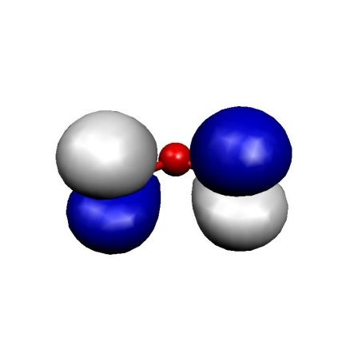
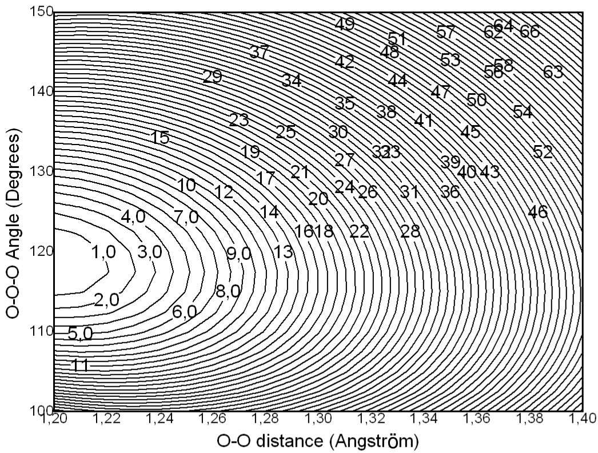
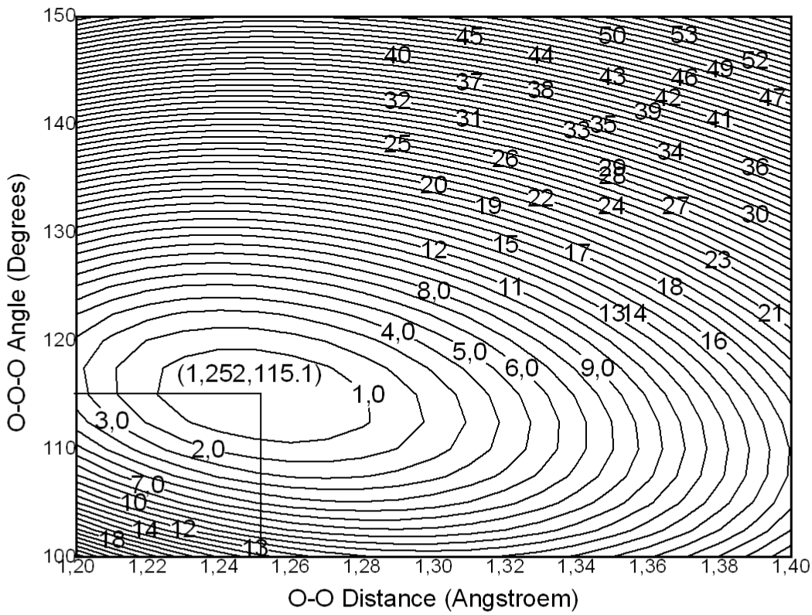
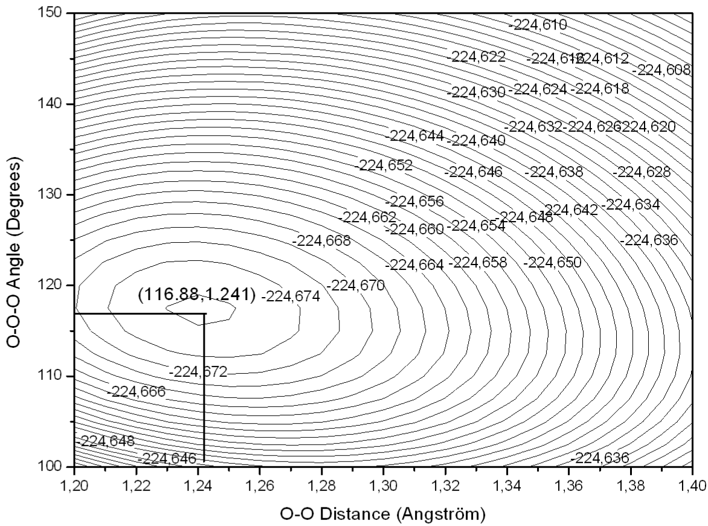
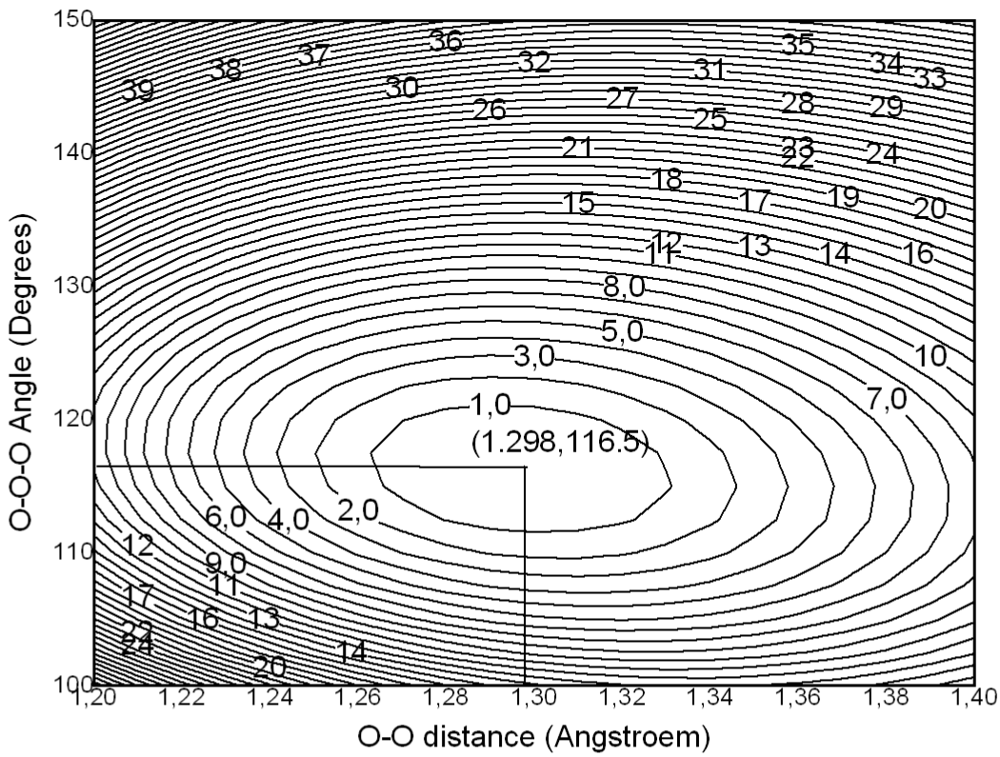
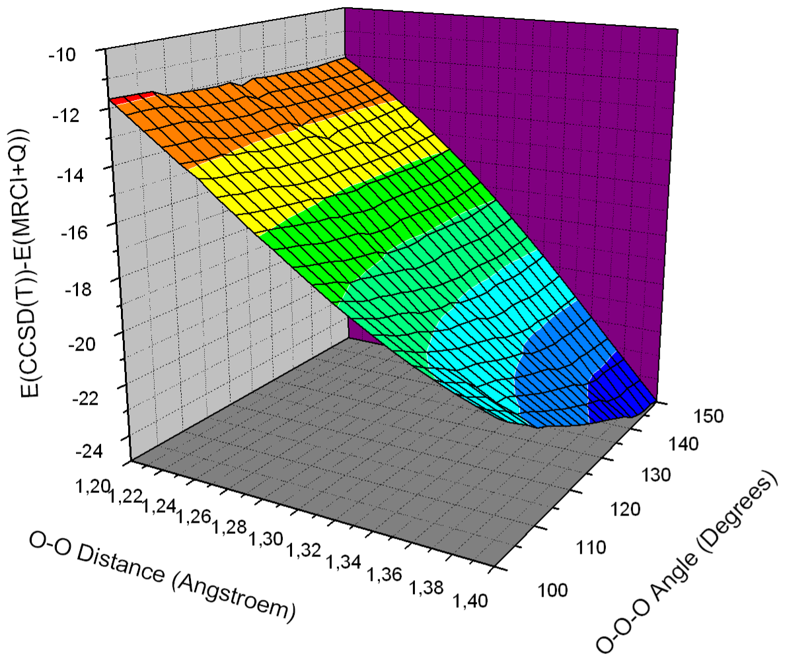
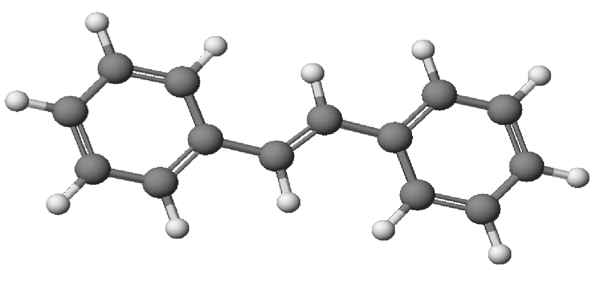
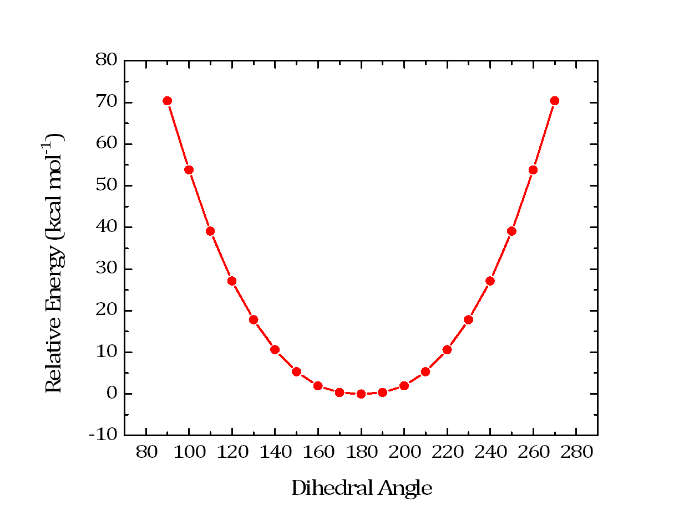

多参考组态相互作用与微扰理论（Multireference Configuration Interaction and Perturbation Theory，非收缩）¶
多参考相关模块（orca_mrci）是为传统（非收缩）方法（组态相互作用 MR-CI
和微扰理论 MR-PT）设计的，这是本节的主要重点。
需要说明的是，这些方法的共同点是它们考虑从参考波函数的每一个
组态状态函数（CSF）出发的激发。因此，
此类方法的计算成本随参考空间（例如 CAS-CI）的大小
迅速增长。此外，为提高效率所有积分必须保存在内存中，这进一步
限制了应用领域。
内收缩（internally contracted）多参考方法，如 N 电子价态微扰理论（NEVPT2），没有 这些瓶颈。这里激发是相对于整个参考 波函数定义的。若干内收缩方法（NEVPT2、NEVPT4(SD)、FIC-MRCC 和 FIC-MRCI）可用并在手册的其他地方描述。
注意
NEVPT2 通常是首选方法，因为它快速且易于使用。如果对该领域不熟悉，强烈建议查看相关章节。以下章节侧重于作为 orca_mrci
模块一部分的传统多参考方法。
引言¶
orca_mrci 中的所有方法都是非收缩的，并从
由多个组态（轨道占据模式）构成的参考波函数开始。虽然分子轨道通常来自 CASSCF 计算，但参考波函数不限于完全活性空间（CAS）。
限制活性空间（RAS）或任意组态列表可以在 refs 子块中定义。
总波函数通过考虑从参考组态出发的单激发和双激发来构建。这些激发
组态随后用于生成具有正确自旋和空间对称性的组态状态函数（CSF）。波函数参数的数量随参考
函数的数量迅速增长。orca_mrci 模块具有一组截断判据
（TSel, TPre, TNat），有助于减少波函数参数的数量。此外，默认情况下，程序只考虑
已经具有目标自旋和空间对称性的参考组态。在某些情况下这是不希望的，可以通过关键词 rejectinvalidrefs false 取消这些限制。
关于理论、程序模块及其用法的更多信息，我们推荐 Neese 等人的综述文章。neese_advanced_2007 该主题的教程式介绍
在手册第 modelchemistries.mrci 章中给出，更多示例见
CASSCF 教程。
尽管已经有相当多的经验，程序的这一部分
使用起来仍有些困难，在接受结果之前需要耐心和
仔细测试。虽然我们尽量
让您的工作轻松，但您必须意识到最终
任何有意义的多参考从头算计算都比标准 SCF 或 DFT
计算或 MP2 这类单参考相关方法需要用户更多的
洞察和规划——所以
不要气馁！您还应该意识到，使用多参考
方法很容易让大型计算机长时间运行却仍然不能产生有意义的结果——您的洞察是成功应用的关键
要素！下面几个示例说明了
orca_mrci 模块的一些基本用法。
RI 近似¶
首先，重要的是要理解当前实现中 MR-CI 模块的默认模式执行从 AO 到 MO 基组的完整积分
变换。当 CI 中包含的 MO 超过约 200 个时，这变得非常费力
且极其占用内存。或者，可以从恒等分解
（resolution of the identity, RI）近似构造分子
电子-电子排斥积分。因此，如果选择此选项，必须提供有意义的辅助基组。我们推荐 TurboMole 开发者为 MP2 计算开发的拟合基组。这些给出
精确的跃迁能；然而，总能量中的误差
略高，可能在 1 mEh 左右。检查
IntMode 以更改积分变换的默认模式。
请注意，无论哪种方式，个别选择的 MRCI 模块都需要
将所有积分保存在内存中，这限制了可研究分子的大小。
个别选择¶
其次，重要的是要理解 MR-CI 模块是 个别选择（individually selecting）类型的。因此，只有那些与目标态的 0\(^{\text{th} }\) 阶近似相互作用强于给定阈值（T\(_{sel })\) 的激发组态 状态函数（CSF）才会包含在变分 过程中。被拒绝的 CSF 的效应使用二阶微扰理论估计。目标态的 0\(^{\text{th} }\) 阶近似 通过对参考空间组态的对角化得到。进一步的近似是通过另一次选择来减小 参考空间的大小——所有对 0\(^{\text{th} }\) 阶态贡献小于第二个阈值（T\(_{pre })\) 的初始参考都从参考空间中被拒绝。
单激发¶
一个重要方面涉及单激发。如果参考
轨道来自 CASSCF 计算，参考态与单激发之间的矩阵元消失，单激发将
不被选中。然而，它们在微扰理论的四阶及更高阶中有贡献，对于获得光滑的势能
能面和精确的分子性质可能很重要。因此，MRCI 模块的默认模式要求通过标志 AllSingles =true 包含所有单
激发。如果参考空间变大，这可能导致冗长的计算！
参考空间¶
第三，MR-CI 模块中的参考空间可以是完全
活性空间（CAS(n-electrons,m-orbitals)）或限制活性
空间（RAS，后面解释）类型。重要的是要理解
程序使用用户提供的 HOMO-LUMO 间隙附近的轨道来构建参考空间！因此，如果您想放入活性空间的轨道不是从您的 SCF 计算中"自然地"出现在正确位置，您必须使用
"moread" 和 "rotate" 功能以及 NoIter 指令重新排列它们。
选择最有意义和经济的参考空间是多参考计算中最重要的步骤。它总是需要
用户的洞察，也需要谨慎，也许还需要一点试错。
尺寸一致性¶
第四，重要的是要理解 CI 型方法不是 尺寸一致的。实际上，具有无相互作用 A 和 B 片段的超分子 A-B 的能量不等于孤立 A 和孤立 B 的能量之和。有近似方法可以考虑这一点（ACPF、AQCC 和 CEPA 方法），但效应 会出现在能量中，包含的电子越多效应越明显。基于微扰理论的方法则不是这样，只要参考波函数是尺寸一致的，它们就是尺寸一致的。
性能¶
有许多标志控制 MR-CI 程序的性能。 请参阅第 0 章了解可能的标志、 阈值和截断的描述。最重要的阈值是 T\(_{\text{sel} }\) 和 T\(_{\text{pre} }\)，对于 SORCI 还有T\(_{\text{nat} }\)。
丝氨酸的两性离子形式。*
对于某些方法（如 ACPF），可以比较 MRCI 模块与 MDCI 模块的性能。MDCI 模块的设计目的是在不引入近似时提供最佳性能。MRCI 模块的编写更多地是 灵活性而非性能。让我们 在一个稍微不平凡的计算中比较两个程序的性能——丝氨酸的两性离子形式。我们比较 选择性 MRCI 方法与无近似的 MDCI 模块。分子大小使得所有四指标积分仍然可以存储 在内存中。
MRCI 和 MDCI 模块在丝氨酸两性离子形式（14 个原子，133 个基函数）上用 bn-ANO-DZP 基组进行单参考计算的性能比较。
| [模块]{style="color: white"} | [方法]{style="color: white"} | [T\(_{sel }\)(Eh)]{style="color: white"} | [时间（秒）]{style="color: white"} | [能量（Eh）]{style="color: white"} |
|---|---|---|---|---|
| MRCI | ACPF | 10\(^{-6}\) | 3277 | -397.943250 |
| MDCI | ACPF | 0 | 1530 | -397.946429 |
| MDCI | CCSD | 0 | 2995 | -397.934824 |
| MDCI | CCSD(T) | 0 | 5146 | -397.974239 |
选择性 ACPF 计算选择了约 15% 的可能双激发并求解规模为\(\approx\) 360,000 CSF 的久期问题。 MDCI 模块的 ACPF 计算优化了约 250 万个 波函数振幅——而这不是大分子或大 基组！尽管 MDCI 模块不做近似， 它比选择性 MRCI 模块快两倍，估计比非选择性 MRCI 模块快 50 倍！对于这类计算中本应使用的更大更精确的基组，这将变得更加明显。选择的误差 在总能量上约为 3 mEh 或 2 kcal/mol。可以期望 至少部分误差在取能量 差时相消。1 更严格的 CCSD 计算比 ACPF 计算大约慢两倍，这似乎是合理的。在这个例子中三激发又增加了大约 2 倍，但对于更大的计算这将增加，因为它对体系大小的标度 更陡。ACPF 能量介于 CCSD 和 CCSD(T) 之间， 这是典型的——ACPF 高估了非连通四重激发的效应，部分补偿了对三重激发的忽略。
这些时间将强烈依赖于您运行计算的体系。尽管如此，您从这个例子中应该得到的信息是： 如果可以使用 MDCI 模块，就用它。
MDCI 模块可以避免对较大体系进行完整积分变换，而 MRCI 模块可以对较大体系使用选择和 RI 近似。 两类计算都将很快变得非常昂贵！近似的 MDCI 计算正在开发中。
对称性¶
MRCI 程序真正利用对称性适应轨道。在这种情况下，MRCI 矩阵可以按照不可约 表示分块并逐个不可约表示对角化。这是一个巨大的 计算优势，允许比不考虑对称性时更容易地收敛到特定的激发 态。
语法 relatively easy。如果您指定：
那么 "*" 表示这要在点群的每个不可约表示中重复。因此，在 C\(_{2v}\) 中，程序会在 C\(_{2v}\) 点群的四个不可约表示中各计算 8 个单重态 根，总共得到 32 个态。
或者，您可以在所需的不可约表示中只计算几个根：
newblock 1 0
nroots 3
refs cas(4,4) end
end
newblock 1 2
nroots 5
refs cas(4,4) end
end
newblock 3 1
nroots 1
refs cas(4,4) end
end
在这个例子中，我们会在不可约表示 "0"（即 A\(_{1})\) 中计算 3 个单重态根，在不可约表示 "2"（即 B\(_{1})\) 中计算 5 个根， 然后在不可约表示 1（即 B\(_{2})\) 中计算 1 个三重态根。
显然，有对称性和无对称性的结果会略有不同。 这是因为没有对称性时参考空间将 包含属于"错误"对称性的参考，但会带着 属于"正确"对称性的激发组态。因此，不使用对称性的计算会有更多被选中的 CSF，从而能量略低。这似乎是不可避免的。然而，对于设计良好的参考空间， 效应应该不会很大，因为额外的 CSF 不属于一阶相互作用 空间。
MR 计算的教程式示例¶
也许 MR-CI 模块最重要的用途是 计算跃迁能和光谱。让我们首先 用 MR-CI 方法加上 Davidson 校正来近似考虑非连通四重 替换的效应，计算甲醛分子的第一个激发单重态和三重态。我们故意为 此计算选择一个 somewhat small 基组，这是合理的，因为我们只看一个 价激发态并想演示原理。
假设我们已经从基态计算知道 H\(_{2}\)CO 的 HOMO 是氧孤对轨道，LUMO 是 \(\pi^{\ast}\) MO。因此，我们想计算单重态和三重态 n\(\to \pi^{\ast }\) 跃迁，别无其他。因此，我们只需在两个轨道中关联两个电子，这意味着 CAS(2,2) 参考 空间。
这个输入——远超实际所需——需要
一些解释：首先，我们选择带 SVP 基组的标准 RHF 计算，
虽然在 SCF 过程中完全不用 SV/C 拟合基组，我们还是指定了它。在 %mrci 块中指定了 MR-CI 过程的所有细节。首先，EWin
（%method frozencore fc_ewin）选择给定轨道能量范围内要包含在相关处理中的 MO。CIType
变量选择多参考处理的类型。有多种选择，
MRCI 只是为此应用选择的一种。
注意
CIType 语句为其他变量选择若干默认值。因此将此语句放在 MR-CI 块的开头并稍后覆盖程序选择的默认值是一个非常好的主意。如果您将 CIType 语句放在它默认选择的某个值之后，您的输入将 simply 被覆盖！
变量 EUnselOpt 和 DavidsonOpt 控制对 MR-CI 能量的校正。EUnselOpt 指定将 MR-CI
能量外推到零阈值 T\(_{\text{Sel} }\) 的方式。这里我们选择在变分步骤之后对缺失贡献进行完整的 MR-MP2 计算，即使用参考波函数的弛豫部分作为 MR-PT 的 0\(^{\text{th} }\) 阶态。DavidsonOpt 控制对更高阶替换效应的估计类型。同样有多种选择，但最常用的（尽管有一些真正的缺点）无疑是
Davidson1 选择。标志 UseIVOs 指示程序使用
"改进虚轨道"（improved virtual orbitals）。这些是从 Fock 算符的对角化得到的虚轨道，其中一个电子已从价轨道以平均方式移除。因此，这些轨道"看到"的是\(N-1\) 电子势（如所需），并且不像 Hartree-Fock
计算中的标准虚轨道那样弥散。如果您在 MR-CI 模块中输入 DFT 轨道（这完全允许，在某些情况下也推荐，例如对于过渡金属配合物），那么建议关闭该标志，因为 DFT 轨道在这方面已经没问题了。两个
阈值 Tsel 和 Tpre 上面已经解释过，分别代表一阶相互作用空间和参考空间的选择判据。Tsel 以 Eh 为单位，指给定激发 CSF 的二阶 MR-MP2 能量贡献。
10\(^{-6}\) Eh 是一个相当好的值。可靠的跃迁能结果从\(\approx 10^{-5}\) 开始；然而，总能量
随该参数收敛相当慢，这是个别选择 CI 过程的最大缺点之一！（见下文）。
Tpre 是无量纲的，指给定初始参考空间对角化后给定初始参考的权重
（10\(^{-4\, }\) 是相当好的值，很少需要更低。激进的值如 10\(^{-2}\) 只选择给定目标态的真正领头
组态，可以节省时间。
不推荐中间值）。参数
MaxMemInt 和 MaxMemVec 告诉程序允许为积分和试验向量及 sigma 向量分别分配多少内存（MB）。
标志 IntMode 告诉程序执行完整的积分变换。对于少于约
100--200 个 MO 的小体系这是可能的。在这种情况下它能显著加快计算。对于较大的分子您必须将此标志设为 RITrafo，这意味着积分使用 RI 近似即时重算，这更昂贵但也是进行计算的唯一方式。要在可能的模式之间切换，请使用：
对于小分子或如果需要高精度的总能量，使用精确的四指标变换要好得多。 限制是超过约 200--300 个 MO 时磁盘空间或主内存会耗尽。
变量 Solver 可以是 diag（用于 Davidson 型对角化）
或 DIIS（用于多根 DIIS 型处理）。
对于 CI 方法，diag 求解器通常更可取。对于像 ACPF 这样包含非线性项的方法，DIIS 是必需的。
输入中接下来是定义要构建和对角化的 CI 矩阵。每个多重度定义 CI 矩阵的一个块，分别指定。这里我们要求两个块——单重态和三重态。一般语法是：
NewBlock Multiplicity Irrep
NRoots 1 # Number of roots to determine
Excitations cisd # Type of excitations
Refs CAS(NEl,NOrb) end # Reference space def.
end # Finalize the block
现在所有输入都已理解，让我们看看这个计算的结果：
SCF 计算之后发生的第一件事是
程序 orca_ciprep 准备冻核 Fock 矩阵和改进虚
轨道。从输出可以看到 IVO 的能量。在这种情况下 LUMO 降到 --8.2 eV，比 SCF 值\(+\)3....
eV 合理得多。同时，该 MO 的形状将更加现实，这很重要，因为这个轨道在参考空间中！
------------------------------------------------------------------------------
ORCA CI-PREPARATION
------------------------------------------------------------------------------
Reading the GBW file ... done
Symmetry usage ... ON
One-Electron Matrix ... test1.H.tmp
GBW-File ... test1.gbw
Improved virtual orbitals ... test1.ivo
First MO in the CI ... 2
Internal Fock matrix ... test1.fi.tmp
LastInternal Orbital ... 6
Integral package used ... LIBINT
Reading the GBW file ... done
Symmetry usage ... ON
Reading the one-electron matrix ... done
Forming inactive density ... done
Forming averaged valence density ...
Scaling the occupied orbital occupation numbers
First MO ... 2
Last MO ... 7
Number of electrons in the range ... 12
Scaling factor ... 0.917
done
Forming internal density ... done
Forming Fock matrix/matrices ...
Nuclear repulsion ... 31.371502
Core repulsion ... 31.371502
One-electron energy ... -114.942080
Fock-energy ... -94.993431
Final value ... -73.596254
done
Modifying virtual orbitals ...
Last occupied MO ... 7
Total number of MOs ... 38
Number of virtual MOs ... 30
Doing diagonalization with symmetry
The improved virtual eigenvalues:
0: -0.2955 au -8.041 eV 2- B2
1: -0.0701 au -1.907 eV 6- A1
2: -0.0176 au -0.479 eV 3- B1
3: 0.0064 au 0.175 eV 7- A1
4: 0.2922 au 7.951 eV 8- A1
5: 0.2948 au 8.021 eV 3- B2
6: 0.3836 au 10.439 eV 4- B1
7: 0.4333 au 11.790 eV 9- A1
8: 0.4825 au 13.128 eV 5- B1
9: 0.5027 au 13.680 eV 10- A1
10: 0.7218 au 19.642 eV 11- A1
11: 0.8351 au 22.723 eV 4- B2
12: 0.9371 au 25.501 eV 6- B1
13: 1.0265 au 27.933 eV 1- A2
14: 1.1141 au 30.317 eV 12- A1
15: 1.2869 au 35.017 eV 5- B2
16: 1.4605 au 39.743 eV 7- B1
...
done
Transforming integrals ... done
Storing passive energy ... done ( -73.59625384 Eh)
Transforming internal FI ... done
.... done with the Frozen Core Fock matrices
下一步是将电子-电子排斥积分变换到 MO 基组：
-------------------------
SHARK HALF TRANSFORMATION
-------------------------
Number of basis functions ... 38
Number of operators ... 1
Operator 0: 2- 37
Integral generator used ... SHARK
Contraction scheme used ... SEGMENTED CONTRACTION
MaxCore in resort ... 256 MB
Half transformed integrals for op= 0 ... test1.SHARK_MNPQ0.tmp
Resorted half transformed integrals ... test1.JAO.tmp
Starting integral generation + half trafo...
Half trafo (segmented) done. Total time =0.1 sec integrals=0.0 sec trafo=0.0 sec
Starting integral resorting ... done ( 0.0 sec)
SHARK half integral transformation done. Total time = 0.1 sec.
-------------------
FULL TRANSFORMATION
-------------------
Processing MO 10
Processing MO 20
Processing MO 30
Full transformation done
Number of integrals made ... 222111
Number of integrals stored ... 59070
Timings:
Time for first half transformation ... 0.068 sec
Time for second half transformation ... 0.014 sec
Total time ... 0.086 sec
这将产生 orca_mrci 所需的几个额外磁盘文件。
然后程序告诉您本次 MRCI 运行将处理哪些多重度：
------------------
CI-BLOCK STRUCTURE
------------------
Number of CI-blocks ... 3
===========
CI BLOCK 1
===========
Multiplicity ... 1
Irrep ... 0
Number of reference defs ... 1
Reference 1: CAS(2,2)
Excitation type ... CISD
Excitation flags for singles:
1 1 1 1
Excitation flags for doubles:
1 1 1 / 1 1 1 / 1 1 1
===========
CI BLOCK 2
===========
Multiplicity ... 1
Irrep ... 1
Number of reference defs ... 1
Reference 1: CAS(2,2)
Excitation type ... CISD
Excitation flags for singles:
1 1 1 1
Excitation flags for doubles:
1 1 1 / 1 1 1 / 1 1 1
===========
CI BLOCK 3
===========
Multiplicity ... 3
Irrep ... 1
Number of reference defs ... 1
Reference 1: CAS(2,2)
Excitation type ... CISD
Excitation flags for singles:
1 1 1 1
Excitation flags for doubles:
1 1 1 / 1 1 1 / 1 1 1
--------------------------------------------------------------------
-------------------- ALL SETUP TASKS ACCOMPLISHED ------------------
-------------------- ( 0.139 sec) ------------------
--------------------------------------------------------------------
现在所有设置任务都已完成，MRCI 计算本身开始了。
###################################################
# #
# M R C I #
# #
# TSel = 1.000e-06 Eh #
# TPre = 1.000e-02 #
# TIntCut = 1.000e-10 Eh #
# Extrapolation to unselected MR-CI by full MP2 #
# DAVIDSON-1 Correction to full CI #
# #
###################################################
---------------------
INTEGRAL ORGANIZATION
---------------------
Reading the one-Electron matrix ... done
E0 read was -73.596253835266
Reading the internal Fock matrix
... assuming it to be equal to the one-electron matrix !!! done
Preparing the integral list ... done
Loading the full integral ... done
Making the simple integrals ... done
***************************************
* CI-BLOCK 1 *
***************************************
Configurations with insufficient # of SOMOs WILL be rejected
Building a CAS(2,2) for multiplicity 1 and irrep=A1
Reference Space:
Initial Number of Configurations : 2
Internal Orbitals : 2 - 6
Active Orbitals : 7 - 8
External Orbitals : 9 - 37
The number of CSFs in the reference is 2
Calling MRPT_Selection with N(ref)=2
第一步是对角化参考空间。从这个 CI 中，
用 Tpre 选择最重要的组态：
------------------
REFERENCE SPACE CI
------------------
Pre-diagonalization threshold : 1.000e-02
Warning: Setting NGuessMat to 512
N(ref-CFG)=2 N(ref-CSF)=2
****Iteration 0****
Lowest Energy : -113.779221580786
Maximum Energy change : 113.779221580786 (vector 0)
Maximum residual norm : 0.000000000000
*** CONVERGENCE OF RESIDUAL NORM REACHED ***
Reference space selection using TPre= 1.00e-02
... found 1 reference configurations (1 CSFs)
... now redoing the reference space CI ...
Warning: Setting NGuessMat to 512
N(ref-CFG)=1 N(ref-CSF)=1
****Iteration 0****
Lowest Energy : -113.778810013503
Maximum Energy change : 113.778810013503 (vector 0)
Maximum residual norm : 0.000000000000
*** CONVERGENCE OF RESIDUAL NORM REACHED ***
在这种情况下，CAS 空间只有 2 个正确对称性适应的 CSF，其中之一（闭壳层行列式）被选中。一般来说， 较大的 CAS 空间通常携带大量不必要的 CSF，这些 CSF 对任何事情都不需要，这时选择对于 减少计算量很重要。第二个参考空间 CI 的结果被打印出来：
----------
CI-RESULTS
----------
The threshold for printing is 0.30 percent
The weights of configurations will be printed. The weights are summed over
all CSFs that belong to a given configuration before printing
STATE 0: Energy= -113.778810014 Eh RefWeight= 1.0000 0.00 eV 0.0 cm**-1
1.0000 : h---h---[20]
Energy 是以 Eh 为单位的总能量。在当前情况下我们可以与 SCF 能量 -113.778810014 Eh 比较，发现参考空间 CI 能量相同，这是必然的，因为最低态与参考空间重合。RefWeight 给出参考
组态在 CI 态中的权重。在当前情况下是 1.0，因为只有参考组态。数字 1.000 是 CI 向量中以下组态的权重。组态 h—h—[20]p—p— 的描述
如下理解：2 活性轨道的占据
显式地在方括号中给出。由于 HOMO 轨道是 SCF 过程中的第 7 号，
在当前示例中这指 MO 7 和 8，因为我们有两个
活性轨道。2 表示双占据，0 表示空。任何出现在 h 之后的数字（代替 —）给出空穴所在的
内部轨道指标。类似地，p 之后的任何数字给出粒子所在的
虚（外部）MO 指标。因此 h—h—[20] 是闭壳层组态，它
与 SCF 组态重合——这当然在预料之中。第二个根（在 CI-Block 2 中）h—h—[11] 相比之下
指一个电子从 HOMO 提升到 LUMO 的组态，因此是我们想计算的
目标态。一切顺利，我们可以继续看
输出。
下一步是生成激发组态并基于 Tsel 进行选择：
------------------------------
MR-PT SELECTION TSel= 1.00e-06
------------------------------
Setting reference configurations WITH use of symmetry
Building active patterns WITH use of symmetry
Selection will be done from 1 spatial configurations
Selection will make use of spatial symmetry
( 0) Refs : Sel: 1CFGs/ 1CSFs Gen: 1CFGs/ 1CSFs (0.000 sec)
Building active space densities ... 0.002 sec
Building active space Fock operators ... 0.000 sec
( 1) (p,q)->(r,s): Sel: 1CFGs/ 1CSFs Gen: 1CFGs/ 1CSFs (0.000 sec)
( 2) (i,-)->(p,-): Sel: 1CFGs/ 1CSFs Gen: 1CFGs/ 1CSFs (0.000 sec)
( 3) (i,j)->(p,q): Sel: 8CFGs/ 8CSFs Gen: 8CFGs/ 8CSFs (0.000 sec)
( 4) (i,p)->(q,r): Sel: 0CFGs/ 0CSFs Gen: 1CFGs/ 1CSFs (0.000 sec)
( 5) (p,-)->(a,-): Sel: 8CFGs/ 8CSFs Gen: 8CFGs/ 8CSFs (0.000 sec)
( 6) (i,-)->(a,-): Sel: 52CFGs/ 52CSFs Gen: 52CFGs/ 52CSFs (0.000 sec)
( 7) (i,j)->(p,a): Sel: 95CFGs/ 166CSFs Gen: 96CFGs/ 167CSFs (0.000 sec)
( 8) (i,p)->(q,a): Sel: 21CFGs/ 42CSFs Gen: 22CFGs/ 44CSFs (0.000 sec)
( 9) (p,q)->(r,a): Sel: 3CFGs/ 3CSFs Gen: 5CFGs/ 5CSFs (0.000 sec)
(10) (i,p)->(a,b): Sel: 555CFGs/ 1082CSFs Gen: 584CFGs/ 1139CSFs (0.001 sec)
(11) (p,q)->(a,b): Sel: 124CFGs/ 124CSFs Gen: 148CFGs/ 148CSFs (0.000 sec)
(12) (i,j)->(a,b): Sel: 1688CFGs/ 2685CSFs Gen: 1887CFGs/ 2947CSFs (0.001 sec)
Selection results:
Total number of generated configurations: 2814
Number of selected configurations : 2557 ( 90.9%)
Total number of generated CSFs : 4522
Number of selected CSFS : 4173 ( 92.3%)
The selected tree structure:
Number of selected Internal Portions : 11
Number of selected Singly External Portions: 27
average number of VMOs/Portion : 6.39
percentage of selected singly externals : 22.83
Number of selected Doubly External Portions: 21
average number of VMOs/Portion : 107.59
percentage of selected doubly externals : 27.76
这里程序遍历各类激发。对于每个激发，它产生激发组态（CFGs）以及组态内可能的线性无关自旋函数（CSFs）。然后它计算与收缩
\(0^{th}\) 阶根的相互作用，如果最大二阶微扰能大于或等于 Tsel，则将属于给定 CFG 的所有 CSF 包含在变分空间中。在当前情况下
产生了\(\approx\)136,000 个 CSF，其中 25% 被
选中。对于较大的分子和基组，产生\(10^{9}\)--\(10^{10}\) 个组态并不罕见，那时别无选择只能选择远小于 20% 的比例。供您参考，程序还会在选择后打印每个态的总能量：
Diagonal second order perturbation results:
State E(tot) E(0)+E(1) E2(sel) E2(unsel)
Eh Eh Eh Eh
----------------------------------------------------------------
0 -114.108350270 -113.778810014 -0.329433 -0.000107
如果需要，您可以忽略此输出。在微扰
过程发散的情况（并不罕见！）下，总能量看起来
奇怪——不用担心——随后的变分计算仍然
没问题。二阶微扰能在此分为选中部分 E2(sel) 和未选中组态提供的部分 E2(unsel)。根据 EUnselOpt 的模式，该值可能
稍后被用作未选中 CSF 能量贡献的估计。3
现在我们在 CI 块 1 的变分空间中有\(\approx\) 4,200 个 CSF，继续使用 Davidson 或 DIIS 型过程对角化这些 CSF 上的哈密顿量：
------------------------
DAVIDSON-DIAGONALIZATION
------------------------
Dimension of the eigenvalue problem ... 4173
Number of roots to be determined ... 1
Maximum size of the expansion space ... 4
Maximum number of iterations ... 35
Convergence tolerance for the residual ... 1.000e-06
Convergence tolerance for the energies ... 1.000e-06
Orthogonality tolerance ... 1.000e-14
Level Shift ... 0.000e+00
Constructing the preconditioner ... o.k.
Building the initial guess ... o.k.
Number of trial vectors determined ... 4
****Iteration 0****
Size of expansion space: 3
Lowest Energy : -113.937028067251
Maximum Energy change : 113.937028067251 (vector 0)
Maximum residual norm : 0.741727830968
****Iteration 1****
Size of expansion space: 4
Lowest Energy : -114.082265676116
Maximum Energy change : 0.145237608865 (vector 0)
Maximum residual norm : 0.012707561344
Rebuilding the expansion space
****Iteration 2****
Size of expansion space: 2
Lowest Energy : -114.085350429118
Maximum Energy change : 0.003084753001 (vector 0)
Maximum residual norm : 0.002880697397
****Iteration 3****
Size of expansion space: 3
Lowest Energy : -114.086043274125
Maximum Energy change : 0.000692845007 (vector 0)
Maximum residual norm : 0.000098595378
****Iteration 4****
****Iteration 4****
Size of expansion space: 4
Lowest Energy : -114.086074300143
Maximum Energy change : 0.000031026018 (vector 0)
Maximum residual norm : 0.000004959126
Rebuilding the expansion space
****Iteration 5****
Size of expansion space: 2
Lowest Energy : -114.086076038587
Maximum Energy change : 0.000001738444 (vector 0)
Maximum residual norm : 0.000000572348
*** CONVERGENCE OF RESIDUAL NORM REACHED ***
Storing the converged CI vectors ... test1.mrci.vec
*** DAVIDSON DONE ***
Returned from DIAG section
该过程同时收敛所有根，在六次迭代后完成，这是合理的。现在程序计算
Davidson 校正（DavidsonOpt），为每个根打印。
即使在这个小例子中，校正也相当大，基态约 27 mEh （激发态约\(\approx 36\) mEh，稍后在输出中）。因此，对跃迁能得到\(\approx 9\) mEh = 0.25 eV 的贡献，这无疑是显著的。 不幸的是，当参考空间权重下降或关联电子数变大时，校正变得不可靠。这里 0.912 和 0.888 仍然可以，体系足够小，可以期望 Davidson 校正给出好结果。
下一步是估计未选中组态的校正：
Unselected CSF estimate:
Full relaxed MR-MP2 calculation ...
Selection will be done from 1 spatial configurations
Selection will make use of spatial symmetry
Selection will make use of spatial symmetry
Selection will make use of spatial symmetry
done
Selected MR-MP2 energies ...
Root= 0 E(unsel)= -0.000106931
在当前情况下这低于 1 mEh，对所有三个态也非常相似，因此对跃迁能不重要。
----------
CI-RESULTS
----------
The threshold for printing is 0.30 percent
The weights of configurations will be printed. The weights are summed over
all CSFs that belong to a given configuration before printing
STATE 0: Energy= -114.113096211 Eh RefWeight= 0.9124 0.00 eV 0.0 cm**-1
0.9124 : h---h---[20]
0.0114 : h 6h 6[22]
最终基态能量是 -114.113096211，这是该基组下完全 CI 能量的估计。
领头组态仍然是权重约 91% 的闭壳层组态。
然而，参考空间之外的双激发贡献了约 1%。这是激发 MO6,MO6\(\to\)LUMO,LUMO。这表明一旦 MO6 也被包含在参考空间中（这是 HOMO-1），预计会有更精确的结果。激发态由
HOMO-LUMO 跃迁主导（如所期望的），但最终 CI 向量中也出现了其他一些单激发和双激发。
现在所有 CI 向量已知，我们可以按能量递增排序并打印（垂直）跃迁能：
-------------------
TRANSITION ENERGIES
-------------------
The lowest energy is -114.113096211 Eh
State Mult Irrep Root Block mEh eV 1/cm
0 1 A1 0 0 0.000 0.000 0.0
1 3 A2 0 2 134.086 3.649 29428.4
2 1 A2 0 1 148.499 4.041 32591.8
这个结果已经相当不错，跃迁能 在其气相实验值（\(\approx 3.50\) 和\(\approx 4.00\) eV）的\(\approx 0.1\) eV 以内，可以与 CIS 值 3.8 和 4.6 eV 相比，后者误差相当大。
下一步求值密度和跃迁密度并计算吸收和 CD 光谱（在偶极长度 形式中）以及自旋允许跃迁的态偶极 矩：
----------------------------------------------------------------------------------------------------
ABSORPTION SPECTRUM VIA TRANSITION ELECTRIC DIPOLE MOMENTS
----------------------------------------------------------------------------------------------------
Transition Energy Energy Wavelength fosc(D2) D2 DX DY DZ
(eV) (cm-1) (nm) (au**2) (au) (au) (au)
----------------------------------------------------------------------------------------------------
0-1A1 -> 0-1A2 4.040866 32591.8 306.8 0.000000000 0.00000 -0.00000 0.00000 0.00000
------------------------------------------------------------------------------------------
CD SPECTRUM VIA TRANSITION ELECTRIC DIPOLE MOMENTS
------------------------------------------------------------------------------------------
Transition Energy Energy Wavelength R MX MY MZ
(eV) (cm-1) (nm) (1e40*cgs) (au) (au) (au)
------------------------------------------------------------------------------------------
0-1A1 -> 0-1A2 4.040866 32591.8 306.8 -0.00000 -0.00000 -0.00000 0.59348
------------------------------------------------------------------------------
STATE DIPOLE MOMENTS
------------------------------------------------------------------------------
Root Block TX TY TZ |T|
(Debye) (Debye) (Debye) (Debye)
------------------------------------------------------------------------------
0 0 0.00000 -0.00000 2.33244 2.33244
0 2 0.00000 -0.00000 1.45831 1.45831
0 1 0.00000 -0.00000 1.58658 1.58658
这里跃迁是对称禁阻的，因此没有 振子强度。基态的态偶极矩是 2.33 Debye，比 SCF 计算的 2.87 Debye 略低。因此，相关效应降低了极性，与如下解释一致：键的离子性（HF 理论总是高估它）被相关所降低。 最后，您还会得到每个生成态密度的详细布居分析，可以与输出前面部分相应的 SCF 分析比较。
关于 MR-CI 模块使用的初始示例到此结束。该模块在磁盘上留下若干文件，大部分目前还不需要，但将来将允许更多分析和重启等。.ivo 文件是标准 .gbw 类型文件，其中的轨道可用于可视化。这对于弄清
生成的 IVO 的身份很重要。也许它们不是您想要的，那么您需要用 IVO 作为输入、NoIter
并在新运行中关闭 IVO 功能重新运行 MR-CI！我们可以用 IVO 作为
态平均 CASSCF 计算的输入：
! moread UseSym KDIIS
%moinp "Test-SYM-MRCI-H2CO.ivo"
%casscf nel 2
norb 2
irrep 0,1,1
mult 1,1,3
nroots 1,1,1
end
如果我们基于这个参考空间进行 MR-ACPF 计算，会发现 计算的跃迁能略差于 MRCI+Q 计算。这是近似簇型方法的典型情况，通常需要稍大的参考空间才能获得精确结果。SORCI 得到类似结果。
%mrci CIType SORCI
tsel 1e-6
tpre 1e-4
tnat 1e-5
AllSingles true
doNatOrbs true
IntMode FullTrafo
# ground state 1A1
NewBlock 1 0
NRoots 1
Excitations cisd
Refs CAS(2,2) end
End
# HOMO LUMO transition 1A2
NewBlock 1 1
NRoots 1
Excitations cisd
Refs CAS(2,2) end
End
# HOMO LUMO triplet transition 3A2
NewBlock 3 1
NRoots 1
Excitations cisd
Refs CAS(2,2) end
End
end
结果是：
State Mult Irrep Root Block mEh eV 1/cm
0 1 A1 0 0 0.000 0.000 0.0
1 3 A2 0 2 144.563 3.934 31728.0
2 1 A2 0 1 161.179 4.386 35374.7
这系统性地偏高 0.4 eV。但让我们看看 近似平均自然轨道（AANOs）占据数：
------------------------
AVERAGE NATURAL ORBITALS
------------------------
Trace of the density to be diagonalized = 12.000000
Sum of eigenvalues = 12.000000
Natural Orbital Occupation Numbers:
N[ 2] ( A1)= 1.99831062
N[ 3] ( A1)= 1.99761604
N[ 4] ( A1)= 1.99479313
N[ 5] ( B1)= 1.99016881
N[ 6] ( B2)= 1.95818285
N[ 7] ( B1)= 1.33014178
N[ 8] ( B2)= 0.70688423
N[ 9] ( B1)= 0.00988561
N[ 10] ( A1)= 0.00436843
这表明有一个低占据轨道（MO6）不在参考空间中。因此，我们再试同样的计算，但现在多一个活性轨道和两个活性电子：
! moread
%moinp "Test-SYM-MRCI-H2CO.gbw"
%casscf nel 4
norb 3
irrep 0,1,1
mult 1,1,3
nroots 1,1,1
end
%mrci CIType SORCI
tsel 1e-6
tpre 1e-4
tnat 1e-5
AllSingles true
doNatOrbs true
IntMode FullTrafo
# ground state 1A1
NewBlock 1 0
NRoots 1
Excitations cisd
Refs CAS(4,3) end
End
# HOMO LUMO transition 1A2
NewBlock 1 1
NRoots 1
Excitations cisd
Refs CAS(4,3) end
End
# HOMO LUMO triplet transition 3A2
NewBlock 3 1
NRoots 1
Excitations cisd
Refs CAS(4,3) end
End
end
结果是：
State Mult Irrep Root Block mEh eV 1/cm
0 1 A1 0 0 0.000 0.000 0.0
1 3 A2 0 2 145.494 3.959 31932.3
2 1 A2 0 1 162.222 4.414 35603.6
现在结果很好了，因为所有 essential physics 都在参考空间中。检查占据数表明不再有可疑的轨道。请注意，这仍然比 MRCI+Q 紧凑得多。
同样，用扩展的参考空间我们从 MRACPF 得到精确结果。
State Mult Irrep Root Block mEh eV 1/cm
0 1 A1 0 0 0.000 0.000 0.0
1 3 A2 0 2 134.985 3.673 29625.8
2 1 A2 0 1 148.330 4.036 32554.6
然而，SORCI 计算更紧凑。对于较大的分子，差异变得越来越明显，SORCI 或甚至 MRDDCI2（带或不带 +Q）可能是唯一可行的方法——如果还有可能的话。
不同多重度之间的激发能¶
作为一个相对精确的 MRCI+Q 计算的例子，考虑以下任务，计算 O\(_{2}\) 的三重态基态和第一激发单重态。
newblock 1 0
nroots 3
refs cas(4,4) end
end
newblock 1 2
nroots 5
refs cas(4,4) end
end
newblock 3 1
nroots 1
refs cas(4,4) end
end
注意线性分子在 D\(_{2h}\) 下运行。这产生一个小问题，因为 CASSCF 过程必然破坏\(^{1}\Delta\) 态的对称性。
LOWEST ROOT (ROOT 0, MULT 3, IRREP B1g) = -149.765383866 Eh -4075.323 eV
STATE ROOT MULT IRREP DE/a.u. DE/eV DE/cm**-1
1: 0 1 B1g 0.033334 0.907 7316.0
2: 0 1 Ag 0.033650 0.916 7385.3
3: 1 1 Ag 0.062381 1.697 13691.1
MRCI+Q 的结果是：
-------------------
TRANSITION ENERGIES
-------------------
The lowest energy is -150.176905551 Eh
State Mult Irrep Root Block mEh eV 1/cm
0 3 B1g 0 0 0.000 0.000 0.0
1 1 B1g 0 2 36.971 1.006 8114.2
2 1 Ag 0 1 38.021 1.035 8344.7
3 1 Ag 1 1 62.765 1.708 13775.2
这些激发能精确到几百个波数以内。注意简并\(^{1}\Delta\) 态中约\(\approx 200\) 波数的分裂是由于 CAS 的对称性破缺和个别选择造成的。用 MP2 自然轨道重复计算给出几乎无法区分的结果，基态能量甚至比用 CASSCF 轨道得到的还低。因此，这样的自然轨道（通常更容易获得）是 CASSCF 轨道的良好替代品，同时由于使用对称性造成的对称性破缺似乎难以避免。
-------------------
TRANSITION ENERGIES
-------------------
The lowest energy is -150.177743426 Eh
State Mult Irrep Root Block mEh eV 1/cm
0 3 B1g 0 0 0.000 0.000 0.0
1 1 B1g 0 2 37.369 1.017 8201.5
2 1 Ag 0 1 38.237 1.040 8392.1
3 1 Ag 1 1 62.731 1.707 13767.9
相关能¶
我们遵循的逻辑如下：CID 减 SCF 给出双激发的效应；到 CISD 给出单激发的效应；QCISD(=CCD) 减 CID 给出非连通四重激发的效应。QCISD 减 QCID 同时给出单激发和非连通三重激发的效应。它们有点难以分离，但如果只看单激发并与单激发 + 非连通三重激发比较，可能得到不错的估计。 最后，QCISD(T) 减 QCISD 给出连通三重激发的效应。 当然也可以用 CCSD 代替 QCISD，但我觉得 T\(_{1}\) 的高次幂使图景稍微模糊了——当然这可以讨论。
首先是 H\(_2\)O/TZVPP 在其 MP2/TZVPP 平衡几何下 （\(T_{\text{pre}} \hspace{0.5mm} = \hspace{0.5mm} 10^{-6}\) 和\(T_{\text{sel} } \hspace{0.5mm} = \hspace{0.5mm} 10^{-9}\) Eh 用于 MRCI 和 MRACPF 计算）：
| [激发类]{style="color: white"} | [能量（Eh）]{style="color: white"} | [能量差（mEh）]{style="color: white"} |
|---|---|---|
| 无 (RHF) | -76.0624 | |
| 双激发 (CID) | -76.3174 | 255 |
| +单激发 (CISD) | -76.3186 | 1 |
| +非连通四重激发 (QCID) | -76.3282 | 11 |
| +非连通三重激发 (QCISD) | -76.3298 | 2 |
| +连通三重激发 (QCISD(T)) | -76.3372 | 7 |
| CASSCF(8,6) | -76.1160 | |
| CASSCF(8,6) + MRCI | -76.3264 | 210 |
| CASSCF(8,6) + MRCI+Q | -76.3359 | 10 |
| CASSCF(8,6) + MRACPF | -76.3341 | 218 |
可以观察到单参考和多参考方法之间相当好的一致。特别是非连通三重激发和单激发的贡献非常小。非连通四重激发的估计从多参考 Davidson 校正或 ACPF 都相当好，CCSD(T) 与这些 MR 方法之间的一致在总能量上是 2-3 mEh，大致在化学精度以内。
为了也有一个开壳层分子，让我们看 N-H 距离为 1.0 Å 用 TZVPP 基组的 NH。
| [激发类]{style="color: white"} | [能量（Eh）]{style="color: white"} | [能量差（mEh）]{style="color: white"} |
|---|---|---|
| 无 (UHF) | -54.9835 | |
| 双激发 (CID) | -55.1333 | 150 |
| +单激发 (CISD) | -55.1344 | 1 |
| +非连通四重激发 (QCID) | -55.1366 | 3 |
| +非连通三重激发 (QCISD) | -55.1378 | 1 |
| +连通三重激发 (QCISD(T)) | -55.1414 | 4 |
| CASSCF(6,5) | -55.0004 | |
| CASSCF(6,5) + MRCI | -55.1373 | 137 |
| CASSCF(6,5) + MRCI+Q | -55.1429 | 6 |
| CASSCF(6,5) + MRACPF | -55.1413 | 141 |
同样，一致性相当好，表明单参考和多参考方法都收敛到相同的极限。
阈值¶
现在我们选择 CO 分子（1.128 Å）用 SVP 基组，研究结果对选择阈值的收敛性。与高水平单参考方法的比较是可行的（SCF 能量是 -112.645 946 Eh）。
总能量的参考值¶
单参考值是：
BD: -112.938 48002
CCSD: -112.939 79145
QCISD: -112.941 95700
BD(T): -112.950 17278
CCSD(T): -112.950 63889
QCISD(T): -112.951 37425
MP4(SDTQ): -112.954 80113
不含连通三重激发的计算（BD、CCSD、QCISD）大约是不显式考虑三重激发所能达到的最好结果。CCSD 在这类中可能是最好的。一旦包含连通三重激发，CCSD(T)、QCISD(T) 和 BD(T) 值就接近了，根据经验它们也接近完全 CI 值，后者预计在 --112.950 到 --112.952 Eh 之间。
单参考方法对 T\(_{\text{sel} }\) 的收敛性¶
接下来研究这些单参考方法如何随 T\(_{\text{sel} }\) 收敛：
Closed-Shell ACPF:
Tsel Energy (NCSF) Energy (NCSF)
(Eh) AllSingles=true AllSingles=false
TSel=0 -112.943 387 (5671)
TSel=1e-14 -112.943 387 (2543) -112.943 387 (2478)
TSel=1e-10 -112.943 387 (2543) -112.941 023 (2453)
TSel=1e-08 -112.943 387 (2451) -112.937 087 (2346)
TSel=1e-06 -112.943 350 (2283) -112.937 046 (2178)
TSel=1e-05 -112.943 176 (1660) -112.936 821 (1555)
TSel=1e-04 -112.944 039 ( 782) -112.938 381 ( 677)
很明显，如果不自动包含单激发，收敛是不稳定的。这就是从 2.6.35 版本开始将其作为默认的原因。在当前情况下，单激发只会由于舍入误差被选中，因为根据 Brillouin 定理，单激发与基态行列式的相互作用为零。因此，对于个别选择的单参考方法，自动包含所有单激发以获得收敛结果是个好主意。替代方案是不同的单激发选择过程，但尚未开发。双激发的选择似乎能相当好地收敛总能量。可以看到选择在 10\(^{-5}\) 到 10\(^{-7}\) Eh 之间选择了大部分 CSF。10\(^{-6}\) Eh 的阈值已经给出小于 0.1 mEh 的误差，相对于反应能等可以忽略。即使 10\(^{-5}\) Eh 也给出小于 0.1 kcal/mol 的误差。
多参考方法对 T\(_{\text{pre} }\) 的收敛性¶
我们接下来转向多参考处理。这里我们想关联所有价轨道中的所有价电子，因此 CAS(10,8) 是合适的选择。我们首先通过使用 T\(_{\text{sel} }=\)10\(^{-14}\) 要求 T\(_{\text{pre} }\) 的收敛值，对 MRCI\(+\)Q 得到：
TPre = 1e-1: -112.943 964
1e-2: -112.952 963
1e-3: -112.953 786
1e-4: -112.954 019
1e-5: -112.954 336
1e-6: -112.954 416
1e-7: -112.954 440
因此，T\(_{\text{pre} }=10^{-4}-10^{-6}\) 可获得相当好的收敛。因此\(10^{-4}\) 是默认值。
为了展示方便的输入，考虑以下：
#
# Here we calculate the CO ground state correlation energy with several methods
#
! Def2-SVP Def2-SV/C RI-MP2 CCSD(T)
%base "1"
%mp2 density relaxed
donatorbs true
end
* int 0 1
C 0 0 0 0.000000 0.000 0.000
O 1 0 0 1.128 0.000 0.000
*
$new_job
! aug-SVP MRACPF
! moread
%moinp "1.mp2nat"
# the CASSCF is done with MP2 natural orbitals which is a good idea and
# secondly we use a large level shift in order to help convergence
%casscf nel 10
norb 8
mult 1
nroots 1
shiftup 2
shiftdn 2
end
%mrci tsel 1e-8
tpre 1e-6
end
* int 0 1
C 0 0 0 0.000 0.000 0.000
O 1 0 0 1.128 0.000 0.000
*
这个任务同时计算下面所有内容，再次展示了相继的单参考和多参考相关方法之间的一致性
SCF = -112.6459
RI-MP2 = -112.9330
CCSD = -112.9398
CCSD(T) = -112.9506
CASSCF(10,8) = -112.7769
MRACPF = -112.9514
能量差——键断裂¶
对于能量差的计算，我们再次从参考 CCSD(T) 计算开始；这种方法是少数能在实际应用中声称化学精度的方法之一：
Reference Total Energies for N2 at 1.0977 Angstr\"{o}m with
The SVP basis
E(CCSD) = -109.163 497
E(CCSD(T))= -109.175 625
Nitrogen Atom (4S), SVP basis, unrestricted
E(CCSD) = -54.421 004
E(CCSD(T))= -54.421 7183
Energy Difference:
Delta-E(CCSD) = -0.321 489 = 8.75 eV
Delta-E(CCSD(T))= -0.332 188 = 9.04 eV
基组当然不适合与实验值的定量比较。然而，这些计算的重点不在于此，它们本质上是说明性的。SVP 基组刚好足够好，允许进行方法评估而不导致过于昂贵的计算。
现在将这与用一些单参考方法计算的相应能量差进行比较。一个典型输入是（这是一个 somewhat old-fashioned 的例子——在当前程序版本中您会做全价 CASSCF(10,8) 或 CASSCF(6,6) 并用单个关键词调用 MR 方法）：
3 structure (0 4) N 0 0 0 N 0 0 1.0977 N 0 0 0
! HF def2-SVP def2-TZVPP/C VeryTightSCF NoPop
%base "1"
* xyz 0 1
N 0 0 0
N 0 0 1.0977
*
%method
frozencore fc_ewin
end
%mrci
EWin -3,1000
CIType MRACPF2a
Solver DIIS
IntMode FullTrafo
UseIVOs true
AllSingles true
TSel 1e-14
TPre 1e-05
TNat 0.0
ETol 1e-10
RTol 1e-10
NewBlock 1 *
NRoots 1
Excitations CISD
refs CAS(0,0) end
end
end
$new_job
! ROHF def2-SVP def2-TZVPP/C VeryTightSCF NoPop PModel
%base "2"
* xyz 0 4
N 0 0 0
*
%method
frozencore fc_ewin
end
%mrci
EWin -3,1000
CIType MRACPF2a
IntMode FullTrafo
UseIVOs true
AllSingles true
TSel 1e-14
TPre 1e-05
TNat 0.0
ETol 1e-10
RTol 1e-10
NewBlock 4 *
NRoots 1
Excitations CISD
refs CAS(3,3) end
end
end
结果是：
Single reference approaches:
Method N2-Molecule N-Atom Delta-E
CISD+Q : -109.167 904 -54.422 769 8.77 eV
ACPF : -109.166 926 -54.421 783 8.80 eV
ACPF2 : -109.166 751 -54.421 333 8.82 eV
ACPF2a : -109.166 730 -54.421 186 8.83 eV
CEPA1 : -109.159 721 -54.422 564 8.56 eV
CEPA2 : -109.172 888 -54.422 732 8.91 eV
CEPA3 : -109.161 034 -54.422 589 8.59 eV
AQCC : -109.160 574 -54.420 948 8.67 eV
CEPA-0 : -109.174 924 -54.422 951 8.95 eV
除 CEPA1 和 CEPA3 外，结果都是可以的。这些方法表现不佳的原因很简单：实现的形式体系只对闭壳层正确——开壳层需要不同的形式体系，MRCI 模块中没有（但单参考 MDCI 模块中有）。由于 CEPA2 中所做的简单近似，它也应该对开壳层有效，数值结果支持这一点。
接下来我们转向多参考方法，取与 CO 相同的 CAS(10,8) 参考以关联所有价电子。4
Multi reference approaches:
Method N2-Molecule N-Atom Delta-E
MRCISD+Q: -109.180 089 -54.422 667 9.11 eV
MRACPF : -109.178 708 -54.421 685 9.12 eV
MRACPF2 : -109.177 140 -54.421 236 9.11 eV
MRAQCC : -109.175 947 -54.420 851 9.10 eV
SORCI : -109.179 101 -54.422 703 9.08 eV
这个测试计算令人满意地展示了多参考方法的高度一致性，它们都或多或少收敛到相同的结果，这一定是准确的。
能量差——自旋翻转¶
有许多有趣的情况涉及来自不同多重度但相同轨道组态的两个态之间的微小能量差。这就是双自由基或过渡金属配合物中磁耦合遇到的现象。作为这种情况的原始模型，可以考虑线性构型的假想分子 H-Ne-H，本节将用它作为模型。
参考值由所有价电子活性的 MR-ACPF 计算得到（同样，这个例子 somewhat old fashioned——在当前程序版本中您会做 CASSCF 计算然后用单个关键词调用 MR 方法）：
# A simple MRCI example
! def2-SVP def2-SVP/C UseSym
%method frozencore fc_ewin
end
%mrci ewin -3,1000
CIType MRCI
EUnselOpt FullMP2
DavidsonOpt Davidson1
UseIVOs true
tsel 1e-6
tpre 1e-2
MaxMemInt 256
MaxMemVec 32
IntMode FullTrafo
AllSingles true
Solver Diag
# ground state 1A1
NewBlock 1 0
NRoots 1
Excitations cisd
Refs CAS(2,2) end
End
# HOMO LUMO transition 1A2
NewBlock 1 1
NRoots 1
Excitations cisd
Refs CAS(2,2) end
End
# HOMO LUMO triplet transition 3A2
NewBlock 3 1
NRoots 1
Excitations cisd
Refs CAS(2,2) end
end
end
* int 0 1
C 0 0 0 0.000000 0.000 0.000
O 1 0 0 1.200371 0.000 0.000
H 1 2 0 1.107372 121.941 0.000
H 1 2 3 1.107372 121.941 180.000
*
给出参考值 108 cm\(^{-1}\)。我们现在将其与只将两个"磁"轨道（氢上的 1s）放在活性空间中的几种其他方法比较：
... same as above
%mrci EWin -10,1000
CIType MRDDCI3
... same as previously
NewBlock 1 *
NRoots 1
refs CAS(2,2) end
end
NewBlock 3 *
NRoots 1
refs CAS(2,2) end
end
end
结果是：
Method S-T gap
MR-CI+Q : 98 cm-1
MR-CI : 93 cm-1
MR-ACPF : 98 cm-1
MR-ACPF2 : 98 cm-1
MR-ACPF2a: 97 cm-1
MR-AQCC : 95 cm-1
SORCI : 131 cm-1
MR-DDCI2 : 85 cm-1
MR-DDCI3 : 130 cm-1
所有这些方法都给出好结果，SORCI 的误差比其他的略大。（差值专用 CI）DDCI2 方法略微低估了耦合，这是该方法的特征。DDCI3 给出与 SORCI 相同的结果在某种意义上是好的，因为 SORCI 应该近似 DDCI3（或更好的 IDDCI3）结果，它显然做到了。
这个分裂也可以用破缺对称 HF 和 DFT 方法研究，如本手册其他地方所述：
Method S-T gap
UHF : 70 cm-1
B3LYP/G : 240 cm-1
BP86 : 354 cm-1
PW91 : 234 cm-1
PBE : 234 cm-1
PBE0 : 162 cm-1
RPBE : 242 cm-1
这证实了通常的观念；UHF 低估耦合，DFT 高估耦合，杂化泛函比 GGA 高估得少。BP86 比 PW91 或 PBE 差。PBE0 杂化可能是 DFT 方法中最好的。由于某种原因，如果将 BS 态简单地作为真正开壳层单重态的近似，大多数 DFT 方法给出最好的结果。我们认为这没有理论支持，但也被其他作者观察到。
现在让我们研究对 T\(_{\text{sel} }\) 的依赖性，因为这应该是关键的（我们使用 DDCI3 方法）：
一旦包含 AllSingles，收敛就非常好。
势能面¶
需要多参考方法的另一种情况是研究键断裂并想计算完整的势能面。比如说我们想计算 CH 分子的势能面。首先我们需要弄清楚要包含哪些态。因此，让我们首先为全价 CASSCF 参考态确定相当数量的根（我们用小基组使任务快速）。
结果是：
-------------------
TRANSITION ENERGIES
-------------------
The lowest energy is -38.308119994 Eh
State Mult Irrep Root Block mEh eV 1/cm
0 2 -1 0 0 0.000 0.000 0.0
1 2 -1 1 0 0.000 0.000 0.0
2 4 -1 0 1 14.679 0.399 3221.6
3 2 -1 2 0 126.464 3.441 27755.7
4 2 -1 3 0 126.464 3.441 27755.7
5 2 -1 4 0 132.689 3.611 29121.8
6 2 -1 5 0 164.261 4.470 36051.2
7 2 -1 6 0 305.087 8.302 66958.9
8 2 -1 7 0 305.087 8.302 66958.9
9 4 -1 1 1 328.911 8.950 72187.7
10 4 -1 2 1 452.676 12.318 99350.8
11 4 -1 3 1 452.676 12.318 99350.8
12 2 -1 8 0 460.116 12.520 100983.9
13 2 -1 9 0 463.438 12.611 101712.9
14 2 -1 10 0 463.438 12.611 101712.9
...
因此，如果我们想关注低能态，应该包含五个双重态和一个四重态根。现在我们用这些根运行第二个任务并扫描核间距。
此运行得到的势能面如 fig:16 所示。您可以清楚地看到\(^{2}\Sigma\) 和\(^{2}\Delta\) 态在接近平衡距离处的交叉，以及\(^{4}\Sigma\) 态与\(^{2}\Pi\) 和\(^{2}\Sigma\) 向渐近线的合并，在那里 C-H 解离为\(^{3}\)P 基态的中性 C 原子和\(^{2}\)S 基态的中性氢原子。您可以观察到一旦 AllSingles 设为 true（默认值），MRCI 模块的默认设置就给出相当光滑的势能面。
在许多情况下，人们会关注极小值附近的区域，那里势能面几乎是二次的。在这种情况下仍然可以进行几个（2、3、5 点）多项式拟合，从中可以确定重要参数。在这些情况下必须研究数值精度和对\(T_\text{sel}\) 的行为，因为选择会在过程中产生一些噪声。我们用 HF 分子的计算来说明：
NewBlock Multiplicity Irrep
NRoots 1 # Number of roots to determine
Excitations cisd # Type of excitations
Refs CAS(NEl,NOrb) end # Reference space def.
end # Finalize the block
输出包含 Morse 拟合的结果：
可以与用相同基组计算的 CCSD(T) 值比较：
MRCI+Q 和 CCSD(T) 结果之间的一致性相当好。
多参考体系——臭氧¶
臭氧分子由于其双自由基特征是一个相当经典的多参考体系。让我们看看三个最高占据和最低未占据 MO（下一个占据 MO 能量低约 6 eV，下一个虚 MO 能量高约 10 eV）：
ABCD




臭氧分子的前沿 MO。
这些 MO 是两个能量较高的\(\sigma\) 孤对，然后是氧\(\pi\) 孤对的对称和反对称组合。特别是 LUMO 位置很低，将导致强相关效应，因为 (HOMO)\(^{2} \to\) (LUMO)\(^{2}\) 激发将以大系数出现。从物理上讲，这证明了该分子的双自由基特征很大，大致由结构\(\uparrow\)O-O-O\(\downarrow\) 表示。因此，正确处理该分子的最小活性空间是包含 HOMO 和 LUMO 的 CAS(2,2) 空间。我们通过查看沿 O--O 键长和 O-O-O 角的二维势能面的 RHF、MP2、MRACPF 计算来说明（实验值为 1.2717 Å 和 116.78\({^\circ}\)）。
------------------------------------------------------------------------------
ORCA CI-PREPARATION
------------------------------------------------------------------------------
Reading the GBW file ... done
Symmetry usage ... ON
One-Electron Matrix ... test1.H.tmp
GBW-File ... test1.gbw
Improved virtual orbitals ... test1.ivo
First MO in the CI ... 2
Internal Fock matrix ... test1.fi.tmp
LastInternal Orbital ... 6
Integral package used ... LIBINT
Reading the GBW file ... done
Symmetry usage ... ON
Reading the one-electron matrix ... done
Forming inactive density ... done
Forming averaged valence density ...
Scaling the occupied orbital occupation numbers
First MO ... 2
Last MO ... 7
Number of electrons in the range ... 12
Scaling factor ... 0.917
done
Forming internal density ... done
Forming Fock matrix/matrices ...
Nuclear repulsion ... 31.371502
Core repulsion ... 31.371502
One-electron energy ... -114.942080
Fock-energy ... -94.993431
Final value ... -73.596254
done
Modifying virtual orbitals ...
Last occupied MO ... 7
Total number of MOs ... 38
Number of virtual MOs ... 30
Doing diagonalization with symmetry
The improved virtual eigenvalues:
0: -0.2955 au -8.041 eV 2- B2
1: -0.0701 au -1.907 eV 6- A1
2: -0.0176 au -0.479 eV 3- B1
3: 0.0064 au 0.175 eV 7- A1
4: 0.2922 au 7.951 eV 8- A1
5: 0.2948 au 8.021 eV 3- B2
6: 0.3836 au 10.439 eV 4- B1
7: 0.4333 au 11.790 eV 9- A1
8: 0.4825 au 13.128 eV 5- B1
9: 0.5027 au 13.680 eV 10- A1
10: 0.7218 au 19.642 eV 11- A1
11: 0.8351 au 22.723 eV 4- B2
12: 0.9371 au 25.501 eV 6- B1
13: 1.0265 au 27.933 eV 1- A2
14: 1.1141 au 30.317 eV 12- A1
15: 1.2869 au 35.017 eV 5- B2
16: 1.4605 au 39.743 eV 7- B1
...
done
Transforming integrals ... done
Storing passive energy ... done ( -73.59625384 Eh)
Transforming internal FI ... done
.... done with the Frozen Core Fock matrices
由于需要 441 次能量求值，这是一个稍长的计算。RHF 在所检查的几何范围内没有找到任何有意义的极小值。MP2 好得多，接近所需的极小值，但将 O--O 距离低估了约 0.03 Å。CCSD(T) 给出非常好的角度但 O--O 距离太长。事实上，在这些计算中最大的双激发振幅是\(\approx\) 0.2（HOMO--LUMO 双激发），这表明是近简并计算，即使 CCSD(T) 也难以处理。CAS(2,2) 计算已经与实验定性一致，MRCI\(+\)Q 计算则给出几乎完美的吻合。
CCSD(T) 和 MRCI\(+\)Q 势能面的差异表明 CCSD(T) 比 MRCI\(+\)Q 略低，说明它处理了更多的相关。然而 CCSD(T) 的处理是不平衡的。MRCI 计算在 HOMO-LUMO 双激发之上采用单激发和双激发，这产生了显然在平衡 MR 计算中起重要作用的三重和四重激发。这些激发在 MRCI 计算中被显式地处理到所有阶，但在耦合簇方法中只是近似地处理（四重激发作为同时对激发，三重激发作为微扰）。因此，尽管理论在电子结构困难的情况下具有相当的鲁棒性，它不适用于真正的多参考问题。
尽管使用的基组太小，这是一个很好的结果，表明用具有物理合理活性空间（即使是\(2 \times 2\)）的多参考处理对于获得定性和定量正确的结果是多么重要。
ABCDEF






用不同方法计算的$ O_3$ 分子的二维势能面
尺寸一致性¶
最后，我们想研究方法的尺寸一致性误差。为此我们在单参考水平研究两个无相互作用的 HF 分子并与单个 HF 分子的能量比较。这应该给出每种方法典型表现的合理认识（能量以 Eh 为单位）5：
E(HF) E(HF+HF) |Difference|
CISD+Q -100.138 475 -200.273 599 0.00335
ACPF -100.137 050 -200.274 010 0.00000
ACPF2 -100.136 913 -200.273 823 0.00000
AQCC -100.135 059 -200.269 792 0.00032
结果大致如预期——CISD+Q 有相对较大的误差，ACPF 和 ACPF/2 对这类例子是完美的；AQCC 不期望是尺寸一致的，在这方面（只）比 CISD+Q 好约 10 倍。CEPA-0 也是尺寸一致的。
较大分子的高效 MR-MP2 计算¶
非收缩 MR-MP2 方法如今已过时。它们比内收缩方法（例如第 modelchemistries.nevpt2 节描述的 NEVPT2 方法）昂贵得多。此外，MR-MP2 容易出现侵入态，这是实际应用的主要障碍。由于历史原因，本节介绍自 ORCA 2.7.0 版本起可用的传统 MR-MP2 方法。该实现避免了 MR-MP2 的完整积分变换，在时间和内存方面带来显著节省。因此，相对较大的 RI-MR-MP2 计算可以相当高效地完成。然而，程序仍使用非收缩的一阶波函数，这意味着对于非常大的参考空间，计算仍然变得不可行。
例如考虑二苯乙烯分子绕中心双键的旋转
AB


用 CASSCF(2,2) 参考和 MR-MP2 关联参考计算的二苯乙烯绕中心双键的旋转。
该计算的输入如下所示。计算有超过 500 个基函数，每步（CASSCF-MR-MP2）仍在不到一小时内完成。程序处理相对于母体 MRCI 方法减少的双电子积分数，因此也可以应用于较大的分子。注意我们使用了 "JK" 拟合基组以足够精度同时拟合 Coulomb 和动态相关贡献。因此，这个例子表明对于不太大的参考空间，MR-MP2 计算可以用 ORCA 高效完成（一个小细节：计算从 90 度二面角开始，以确保正确的两个轨道在活性空间中，即在共面结构中构成 pi 键的中心碳 p 轨道）。
#
# Stilbene rotation using MRMP2
#
! def2-TZVP def2/JK RIJCOSX RI-MRMP2
%casscf nel 2
norb 2
end
%mrci maxmemint 2000
tsel 1e-8
end
%paras DIHED = 90,270, 19
end
* int 0 1
C 0 0 0 0.000000 0.000 0.000
C 1 0 0 1.343827 0.000 0.000
C 2 1 0 1.490606 125.126 0.000
C 1 2 3 1.489535 125.829 \{DIHED\}
C 4 1 2 1.400473 118.696 180.000
C 4 1 2 1.400488 122.999 0.000
C 6 4 1 1.395945 120.752 180.000
C 5 4 1 1.394580 121.061 180.000
C 8 5 4 1.392286 120.004 0.000
C 3 2 1 1.400587 118.959 180.000
C 3 2 1 1.401106 122.779 0.000
C 11 3 2 1.395422 120.840 180.001
C 12 11 3 1.392546 120.181 0.000
C 13 12 11 1.392464 119.663 0.000
H 1 2 3 1.099419 118.266 0.000
H 2 1 3 1.100264 118.477 179.999
H 5 4 1 1.102119 119.965 0.000
H 6 4 1 1.100393 121.065 0.000
H 7 6 4 1.102835 119.956 180.000
H 8 5 4 1.102774 119.989 180.000
H 9 8 5 1.102847 120.145 180.000
H 10 3 2 1.102271 120.003 0.000
H 11 3 2 1.100185 121.130 0.000
H 12 11 3 1.103001 119.889 180.000
H 13 12 11 1.102704 120.113 180.000
H 14 13 12 1.102746 119.941 180.000
*
使用 SOC 子模块计算性质¶
零场分裂¶
自旋-轨道耦合（SOC）和自旋-自旋耦合（SSC）对零场分裂（ZFS）的贡献可以用来自多组态计算（如 CASSCF、MRCI 或 MRPT 等多参考类型）的波函数非常精确地计算，如 QDPT 磁性质节 spectroscopyproperties.qdpt_magnetic_properties 所述。
# In case that you want to run QDPT-SOC calculation with manually adjusted
# diagonal energies you can copy the following part into the %mrci soc
# block and modify it as needed (energies are given in wavenumbers relative
# to the lowest state).
#
# NOTE: It is YOUR responsibility to make sure that the CAS-CI state that
# you may want to dress with these energies correlates properly with
# the energies printed here. The order of states or even the identity
# of states may change with and without inclusion of dynamic
# correlation. In the case that dynamic correlation strongly mixes,
# different CAS-CI states there may not even be a proper correlation!
#
EDiag[ 0] -149.526236244 # root 0 of block 0
EDiag[ 1] -149.359818263 # root 1 of block 0
EDiag[ 2] -149.359818263 # root 2 of block 0
EDiag[ 3] -149.496737695 # root 0 of block 1
EDiag[ 4] -149.496737695 # root 1 of block 1
EDiag[ 5] -149.474844108 # root 2 of block 1
这些跃迁能可以用输入文件中提供的更精确的能量替代，如下：
%soc
dosoc true
dossc true
EDiag[ 0] -149.526236244 # root 0 of block 0
EDiag[ 1] -149.359818263 # root 1 of block 0
EDiag[ 2] -149.359818263 # root 2 of block 0
EDiag[ 3] -149.496737695 # root 0 of block 1
EDiag[ 4] -149.496737695 # root 1 of block 1
EDiag[ 5] -149.474844108 # root 2 of block 1
end
精确的对角能量通常能提高 SOC 和 SSC 分裂的精度。
局域零场分裂¶
该子模块也可用于计算原子中心的局域 ZFS 分裂参数。该方法称为局域完全活性空间组态相互作用（L-CASCI），可用于将总 ZFS 张量的 SOC 部分分离为原子贡献。其原理和更多细节在原始出版物 retegan_first-principles_2014 中描述；下面仅列出重现其中二聚体配合物计算所需的步骤。
1. 第一步是获得将在组态相互作用（CI）过程中使用的分子轨道。一组好的轨道可以从限制开壳层自旋平均 Hartree-Fock（SAHF）计算获得。输入的相关部分如下：
对于当前的 Mn(II)Mn(III) 二聚体，共有 9 个电子分布在 10 个 d 轨道中。
2. 接下来，使用实现的定域化方案之一对分子轨道进行定域化。下面是本例中使用的 orca_loc 输入：
sahf.gbw
sahf.loc
0
200 # first of the 10 d-orbitals
209 # last of the 10 d-orbitals
128
0.000001
0.75
0.65
2
3. 随后，使用 orca_blockf 工具对 Fock 矩阵进行块对角化，使定域轨道成为局域正则的。
前两个数字定义定域在一个中心上的分子轨道范围；后两个用于第二个中心。
4. 存储在 sahf.loc 文件中的重新正则化轨道随后可用于以下 MRCI 输入来计算 Mn(III) 中心局域 ZFS 的 SOC 贡献：
! ZORA-def2-TZVP def2-TZVP/C ZORA
! nomulliken noloewdin
! moread noiter allowrhf
! moread
% mrci
citype mrci
tsel 0
tpre 0
intmode ritrafo
solver diis
soc
intmode ritrafo
dosoc true
end
newblock 10 *
nroots 5
excitations none
refs
# Mn(II) Mn(III)
{1 1 1 1 1 1 1 1 1 0}
{1 1 1 1 1 1 1 1 0 1}
{1 1 1 1 1 1 1 0 1 1}
{1 1 1 1 1 1 0 1 1 1}
{1 1 1 1 1 0 1 1 1 1}
end
end
newblock 8 *
nroots 45
excitations none
refs
# Mn(II) Mn(III)
{1 1 1 1 1 2 1 1 0 0}
{1 1 1 1 1 2 1 0 1 0}
{1 1 1 1 1 2 1 0 0 1}
{1 1 1 1 1 2 0 1 1 0}
{1 1 1 1 1 2 0 1 0 1}
{1 1 1 1 1 2 0 0 1 1}
{1 1 1 1 1 1 2 1 0 0}
{1 1 1 1 1 1 2 0 1 0}
{1 1 1 1 1 1 2 0 0 1}
{1 1 1 1 1 1 1 2 0 0}
{1 1 1 1 1 1 1 1 1 0}
{1 1 1 1 1 1 1 1 0 1}
{1 1 1 1 1 1 1 0 2 0}
{1 1 1 1 1 1 1 0 1 1}
{1 1 1 1 1 1 1 0 0 2}
{1 1 1 1 1 1 0 2 1 0}
{1 1 1 1 1 1 0 2 0 1}
{1 1 1 1 1 1 0 1 2 0}
{1 1 1 1 1 1 0 1 1 1}
{1 1 1 1 1 1 0 1 0 2}
{1 1 1 1 1 1 0 0 2 1}
{1 1 1 1 1 1 0 0 1 2}
{1 1 1 1 1 0 2 1 1 0}
{1 1 1 1 1 0 2 1 0 1}
{1 1 1 1 1 0 2 0 1 1}
{1 1 1 1 1 0 1 2 1 0}
{1 1 1 1 1 0 1 2 0 1}
{1 1 1 1 1 0 1 1 2 0}
{1 1 1 1 1 0 1 1 1 1}
{1 1 1 1 1 0 1 1 0 2}
{1 1 1 1 1 0 1 0 2 1}
{1 1 1 1 1 0 1 0 1 2}
{1 1 1 1 1 0 0 2 1 1}
{1 1 1 1 1 0 0 1 2 1}
{1 1 1 1 1 0 0 1 1 2}
end
end
end
5. 计算结束时打印的三个二阶 ZFS 分量（Second order D-tensor: component 0 等）使用该配合物的 S 值（本例中为 4.5（9 个电子\(\times\) 0.5））进行缩放。为了获得正确的 ZFS 局域值，三个矩阵必须用 Mn(III) 的 S 值（即 2）重新缩放。注意三个矩阵有不同的缩放前置因子，对 S 的依赖性不同：
\(D^{SOC-(0) } \propto \frac{1}{S^2}\)
\(D^{SOC-(-1) } \propto \frac{1}{S(2S-1) }\)
\(D^{SOC-(+1) } \propto \frac{1}{(S+1)(2S+1) }\)
这些方程可用于计算所需的前置因子。例如对于 SOC-(0)，前置因子等于：
\(D_{\mathrm{Mn(III) }}^{SOC-(0) } = \frac{4.5^2}{2^2}\cdot D_{\mathrm{dimer} }^{SOC-(0) } = 5.0625 \cdot D_{\mathrm{dimer} }^{SOC-(0) }\)
最后一步是用适当的前置因子缩放其余两个矩阵，将三个矩阵相加，对所得矩阵对角化，并用其本征值计算 D 和 E 参数。这些代表 Mn(III) 中心的局域 ZFS 参数。
来自激发多重态的零场分裂¶
对于激发态多重态，可以通过以下方式请求 ZFS 计算
Lowest eigenvalue of the SOC matrix: -149.86223277 Eh
Energy stabilization: -2.54512 cm-1
Eigenvalues: cm-1 eV Boltzmann populations at T = 300.000 K
0: 0.00 0.0000 3.36e-01
1: 2.37 0.0003 3.32e-01
2: 2.37 0.0003 3.32e-01
3: 7757.65 0.9618 2.33e-17
4: 7757.66 0.9618 2.33e-17
5: 11913.81 1.4771 5.15e-26
*****************************************
EXCITED STATE ZERO-FIELD SPLITTING:
*****************************************
--------------------------------------------
Computing Excited State D Tensors of
Excited State Multiplet Consisting of States : 3 4 5
--------------------------------------------
0 4
1 5
2 0
3 1
4 0
5 2
--------------------------------------------
ZERO-FIELD SPLITTING
(2ND ORDER SPIN-ORBIT COUPLING CONTRIBUTION)
--------------------------------------------
D = -2.668445 cm-1
E/D = 0.000103
...
--------------------------------------------------------
ZERO-FIELD SPLITTING
EFFECTIVE HAMILTONIAN SOC CONTRIBUTION
--------------------------------------------------------
D = -2.674495 cm-1
E/D = 0.009610
...
g-张量¶
orca_mrci 程序包含使用 MRCI 波函数计算 g-张量的选项。对于奇数电子体系，从 QDPT 过程获得的二重简并本征值代表 Kramers 对，用于从 Zeeman 哈密顿量构建总自旋算符和总角动量算符的矩阵元。将\(\Psi\) 记为一个解，\(\bar{\Psi}\) 记为其 Kramers 伙伴，并使用矩阵元记号
g-矩阵的元素由下式获得：
然后，真实张量 G 由 g-矩阵构建：
G 进一步对角化得到正本征值，其平方根给出 g-矩阵的主值。
g-张量计算的输入文件的典型 mrci 块（例如 S=3/2 问题）应如下所示：
%mrci ewin -4,1000
citype mrci
cimode direct2
intmode fulltrafo
solver diis
etol 1e-8
rtol 1e-8
tsel 1e-6
tpre 1e-5
soc
PrintLevel 2
GTensor true # make g-tensor calculations
NDoubGTensor 2 # number of Kramers doublets to account
# for every pair a separate
# calculation is performed
end
newblock 4 *
excitations cisd
nroots 10
refs cas(7,5) end
end
end
第一对 Kramers 对的结果打印如下：
--------------
KRAMERS PAIR 1
--------------
Matrix elements Re<1|S|1> -0.072128 0.024511 -2.998843
Matrix elements Re<1|S|2> -0.001088 0.000366 -0.002010
Matrix elements Im<1|S|2> -0.000354 -0.001037 -0.000173
Matrix elements Re<1|L|1> -0.027067 0.009209 -1.123531
Matrix elements Re<1|L|2> -0.000031 0.000010 -0.000763
Matrix elements Im<1|L|2> -0.000006 -0.000011 -0.000065
-------------------
ELECTRONIC G-MATRIX
-------------------
g-matrix:
-0.002240 0.000754 -0.005551
0.000720 0.002100 0.000477
-0.198556 0.067498 -8.251703
g-factors:
0.002220 0.002222 8.254370 iso = 2.752937
g-shifts:
-2.000100 -2.000098 6.252051 iso = 0.750618
Eigenvectors:
0.057426 0.998060 0.024055
0.998327 -0.057244 -0.008177
0.006784 -0.024484 0.999677
这里对于\(L\) 和\(S\) 矩阵元，指标 1 和 2 被假设表示 Kramers 伙伴，第一行的三个数字代表\(x, y, z\) 贡献。
此外，g-张量也在有效哈密顿量形式体系中计算。
----------------------------------------------
ELECTRONIC G-MATRIX FROM EFFECTIVE HAMILTONIAN
----------------------------------------------
g-matrix:
1.978874 -0.000345 0.018908
-0.000345 1.977899 -0.006433
0.018879 -0.006418 2.763402
g-factors:
1.977789 1.978477 2.763909 iso = 2.240058
g-shifts:
-0.024530 -0.023843 0.761590 iso = 0.237739
Eigenvectors:
0.288884 0.957062 0.024060
0.957364 -0.288770 -0.008181
0.000882 -0.025397 0.999677
# The g-factors are square roots of the eigenvalues of gT*g
# Orientations are the eigenvectors of gT*g
最后且仅在 MRCI 模块中，g-张量使用态求和（Sum Over States）形式体系neese2003sos-gtensors求值：
---------------------------------------------------------------------------
SUM OVER STATES CALCULATION OF THE SPIN HAMILTONIAN (for g and HFC tensors)
---------------------------------------------------------------------------
Ground state index = 0
Ground state multiplicity = 4
Ground state spin density = P[ 1]
State = 1 <0|P|I>= 2 <0|Q|I>= 19
State = 2 <0|P|I>= 3 <0|Q|I>= 27
State = 3 <0|P|I>= 4 <0|Q|I>= 34
State = 4 <0|P|I>= 5 <0|Q|I>= 40
State = 5 <0|P|I>= 6 <0|Q|I>= 45
State = 6 <0|P|I>= 7 <0|Q|I>= 49
State = 7 <0|P|I>= 8 <0|Q|I>= 52
State = 8 <0|P|I>= 9 <0|Q|I>= 54
State = 9 <0|P|I>= 10 <0|Q|I>= 55
Origin for angular momentum ... ( -0.0006, -0.0010, 0.0021)
Kinetic Energy ... done
Relativistic mass correction ... done
Gauge correction ... done
Angular momentum integrals ... done
Reading Spin-Orbit Integrals ... done
-----------------------
MATRIX ELEMENT PRINTING
-----------------------
Energy differences (DE=EI-E0) and spin-orbit matrix elements (SO=<I|HSO|0>) are
printed in cm**-1. Orbital Zeeman matrix elements (L=<I|L|0>) are printed in au.
State DE LX LY LZ SOX SOY SOZ
1 1349.3 0.0464 -0.0158 1.9264 -23.432 7.965 -974.312
2 13026.2 -0.6596 0.6888 0.0214 337.028 -351.116 -10.966
3 13615.1 -0.6961 -0.6514 0.0113 354.225 332.219 -5.736
4 56686.3 -0.0053 0.0077 0.0971 1.794 -1.696 -36.786
5 56954.2 -0.0516 -0.0048 -0.0042 28.211 5.821 1.459
6 56994.0 -0.0418 0.0233 -0.0025 15.185 -2.144 1.145
7 63371.5 -0.0211 0.0226 0.0078 3.833 -2.948 -2.724
8 64176.0 -0.0652 0.0032 -0.0002 32.779 6.146 0.063
9 74309.9 -0.0007 0.0032 0.0380 0.183 -1.058 -13.517
-------------------
ELECTRONIC G-MATRIX
-------------------
raw-matrix :
2.025533 -0.000738 0.021755
-0.000738 2.024537 -0.007389
0.021755 -0.007389 2.928943
g-factors:
2.024122 2.025363 2.929527 iso = 2.326338
g-shifts:
0.021803 0.023044 0.927208 iso = 0.324018
Eigenvectors:
0.533896 -0.845208 0.024064
0.845530 0.533866 -0.008182
-0.005932 0.024715 0.999677
Euler angles w.r.t. molecular frame (degrees):
-76.5038 1.4564 -161.2223
-----------------------------
CONTRIBUTIONS TO THE G-MATRIX
-----------------------------
Term g1 g2 g3
--------------------------------------------------------------------
Relativistic mass correction: -0.0008220 -0.0008220 -0.0008220
Gauge correction : 0.0000000 0.0000000 0.0000000
g(OZ/SOC) : 0.0226250 0.0238662 0.9280297
State 1 : 0.0000000 -0.0000000 0.9279829
State 2 : 0.0013767 0.0223913 0.0000000
State 3 : 0.0212332 0.0014408 0.0000000
State 4 : 0.0000000 0.0000004 0.0000418
State 5 : 0.0000074 0.0000099 0.0000001
State 6 : 0.0000002 0.0000078 0.0000001
State 7 : 0.0000000 0.0000015 0.0000002
State 8 : 0.0000076 0.0000144 0.0000000
State 9 : 0.0000000 0.0000000 0.0000046
-----------------------------------------
Total g-shifts : 0.0218030 0.0230442 0.9272077
# The g-factors are square roots of the eigenvalues of gT*g
# Orientations are the eigenvectors of gT*g
注意在 SOS 形式体系中，除了二阶（SOC）贡献外，对场的双线性项：相对论质量校正和抗磁自旋-轨道项（Gauge）也被求值。可以看到，与二阶 SOC 贡献相比，这些校正相当可忽略，大多数时候可以安全地省略。此外，通过打印每个激发态对 g-张量的单独贡献可以获得进一步的洞察。在上面的例子中，第一激发态对\(g_z\) 分量有贡献，而接下来的两个分别对\(g_x\) 和\(g_y\) 分量有贡献。
总结一下，在 MRCI 和/或 CASSCF 等基于波函数的方法框架中，g-张量计算可以通过以下方式求值：
-
通过 QDPT 方法在单个 Kramers 双重态内。这种分析仅对非整数自旋情况有效。特别是对于具有良好隔离的 Kramers 双重态的体系，其中 EPR 谱仅来自在赝自旋 1/2 形式体系中定义的一个 Kramers 双重态。该分析已被证明对确定 ZFS 的符号和所研究体系的电子结构有用。maganas2011zfs
-
在有效哈密顿量方法内。这对所有自旋情况都是有效的分析，因为它提供在分子轴坐标系中求值的所研究体系的主 g 值。这些 g 值可以直接与实验确定的值比较。maganas2015zfs
-
在态求和（SOS）形式体系内。如上所述，该分析对所有自旋情况有效，且仅通过 MRCI 模块提供。
磁化与磁化率¶
ORCA 的 MRCI 和 CASSCF 模块允许通过对 QDPT 哈密顿量关于磁场的微分，在不同磁场和温度下计算磁化和磁化率曲线。对于磁化率，当定义了非零静磁场时，计算以两种方式进行：(i) 作为能量对磁场的二阶导数；(ii) 作为磁化除以磁场。虽然第一种方法对应于磁化率的定义，但第二种方法在实验确定\(\chi*T\) 曲线中被广泛使用。如果静磁场较低，两种公式倾向于提供相似的值。
完整关键词列表如下。
%mrci
citype mrci
newblock 3 *
excitations none
refs cas(2,7) end
end
soc
dosoc true
domagnetization true # Calculate magnetization (def: false)
dosusceptibility true # Calculate susceptiblity (def: false)
LebedevPrec 5 # Precision of the grid for different field
# directions (meaningful values range from 1
# (smallest) to 10 (largest))
nPointsFStep 5 # number of steps for numerical differentiation
# (def: 5, meaningful values are 3, 5 7 and 9)
MAGFieldStep 100.0 # Size of field step for numerical
# differentiation (def: 100 Gauss)
MAGTemperatureMIN 4.0 # minimum temperature (K) for magnetization
MAGTemperatureMAX 4.0 # maximum temperature (K) for magnetization
MAGTemperatureNPoints 1 # number of temperature points for magnetization
MAGFieldMIN 0.0 # minimum field (Gauss) for magnetization
MAGFieldMAX 70000.0 # maximum field (Gauss) for magnetization
MAGNpoints 15 # number of field points for magnetization
SUSTempMIN 1.0 # minimum temperature (K) for susceptibility
SUSTempMAX 300.0 # maximum temperature (K) for susceptibility
SUSNPoints 300 # number of temperature points for susceptibility
SUSStatFieldMIN 0.0 # minimum static field (Gauss) for susceptibility
SUSStatFieldMAX 0.0 # maximum static field (Gauss) for susceptibility
SUSStatFieldNPoints 1 # number of static fields for susceptibility
end
end
相同的关键词适用于 CASSCF 计算中的 rel 块（代替 MRCI 中的 soc）。虽然可以通过关键词修改积分和网格精度的不同方面，但默认值应能提供对两种性质的精确描述。计算的磁化和磁化率分别打印在 .sus 和 .mag 文件中，也在输出文件中。
-------------------------------------------------------------------------------
FIELD DEPENDENT MAGNETIZATION AND MEAN SUSCEPTIBILITY (chi=M/B)
-------------------------------------------------------------------------------
TEMPERATURE (K) M. FIELD (Gauss) MAGNETIZATION (B.M.) chi*T (cm3*K/mol)
-------------------------------------------------------------------------------
4.00 0.00 0.000000 inf
4.00 5000.00 0.350759 1.567189
4.00 10000.00 0.688804 1.538788
4.00 15000.00 1.003466 1.494496
4.00 20000.00 1.287480 1.438115
4.00 25000.00 1.537346 1.373773
4.00 30000.00 1.752841 1.305282
4.00 35000.00 1.936067 1.235764
4.00 40000.00 2.090450 1.167516
4.00 45000.00 2.219920 1.102067
4.00 50000.00 2.328368 1.040315
4.00 55000.00 2.419335 0.982690
4.00 60000.00 2.495883 0.929301
4.00 65000.00 2.560582 0.880052
4.00 70000.00 2.615538 0.834730
-----------------------------------------------------------
-----------------------------------------------------------
TEMPERATURE DEPENDENT MAGNETIC SUSCEPTIBILITY
-----------------------------------------------------------
STATIC FIELD TEMPERATURE chi*T (cm3*K/mol)
(Gauss) (K) M/B d2E/dB2
-----------------------------------------------------------
0.00 1.00 ---- 1.576836
0.00 2.00 ---- 1.576910
0.00 3.00 ---- 1.576951
0.00 4.00 ---- 1.576988
0.00 5.00 ---- 1.577023
0.00 6.00 ---- 1.577057
0.00 7.00 ---- 1.577091
0.00 8.00 ---- 1.577125
0.00 9.00 ---- 1.577159
0.00 10.00 ---- 1.577193
0.00 11.00 ---- 1.577227
.....
0.00 300.00 ---- 1.586942
1000.00 1.00 1.570517 1.558042
1000.00 2.00 1.575324 1.572178
1000.00 3.00 1.576246 1.574845
1000.00 4.00 1.576590 1.575802
1000.00 5.00 1.576768 1.576264
1000.00 6.00 1.576880 1.576530
1000.00 7.00 1.576961 1.576704
1000.00 8.00 1.577026 1.576829
.....
注意 CASSCF 模块也支持在非零用户定义磁场下计算磁化率张量。MRCI 模块目前尚不支持。
MCD 与吸收光谱¶
ORCA 程序的 MRCI 模块允许计算 MCD 光谱和 SOC 对吸收光谱的影响。该形式体系由 Ganyushin 和 Neese 详细描述ganyushin2008。该方法基于直接计算磁能级之间的跃迁能和跃迁概率。即从初始态流形\(A\) 到终态流形\(J\) 的跃迁中 LCP- 和 RCP 光子的微分吸收。使用 Fermi 黄金规则、Franck-Condon 近似，假设纯电子偶极机制并考虑能级的 Boltzmann 布居，MCD 光谱的基本方程可以写为（全文使用原子单位）：
这里\(a\) 和\(j\) 标记实验中探测的初始和终态流形的成员。
表示 Boltzmann 布居，其中\(a\)-th 基态子能级在能量\(E_{a}\)，\(f\left( E \right)\) 表示线形函数，\(\gamma\) 表示常数集合。电偶极算符由下式给出：
它们表示偶极矩算符的线性组合：
其中\(N\) 和\(i\) 分别表示核（在位置\(\vec{{R} }_{N}\)，电荷\(Z_{N})\) 和电子（在位置\(\vec{{r} }_{i} )\) 的求和。计算的跃迁偶极矩需要在 Euler 角上进行空间平均，通过在三个角度网格上简单求和完成。
最后，每次跃迁用具有确定 Gaussian 形状宽度参数的 Gaussian 曲线近似。因此，最终计算的 MCD 光谱来自这些曲线的叠加。
作为示例，考虑计算 [Fe(CN)\(_{6}\)]\(^{3-}\) 的 MCD 光谱经典例子。输入文件的 mrci 块如下所示。
%mrci ewin -4,10000
citype mrddci2
intmode ritrafo
Tsel 1e-6
Tpre 1e-5
etol 1e-8
rtol 1e-8
cimode direct2
maxmemint 300
solver diis
davidsonopt 0
nguessmat 150
MaxIter 50
LevelShift 0.5
PrintLevel 3
soc
printlevel 3
Domcd true # perform the MCD calculation
NInitStates 24 # number of SOC and SSC state to account
# Starts from the lowest state
NPointsTheta 10 # number of integration point for
NPointsPhi 10 # Euler angles
NPointsPsi 10 #
B 43500 # experimental magnetic field strength
# in Gauss
Temperature 299.0 # experimental temperature (in K)
end
newblock 2 *
nroots 12
excitations cisd
refs cas(23,12) end
end
end
参数 B 和 Temperature 可以成对指定，即 B\(=\) 1000, 2000, 3000...，Temperature\(=\) 4, 10, 300.... 程序为每对计算 MCD 和吸收光谱。现在对积分网格的每个点，程序打印出 Euler 角、磁场在分子坐标系中的取向和能级。
Psi = 36.000 Phi = 72.000 Theta = 20.000
Bx = 8745.0 By = 12036.5 Bz = 40876.6
Energy levels (cm-1,eV):Boltzmann populations for T = 299.000 K
0 : 0.000 0.0000 4.53e-01
1 : 3.943 0.0005 4.45e-01
2 : 454.228 0.0563 5.09e-02
3 : 454.745 0.0564 5.08e-02
4 : 1592.142 0.1974 2.13e-04
5 : 1595.272 0.1978 2.10e-04
6 : 25956.363 3.2182 2.59e-55
7 : 25958.427 3.2184 2.56e-55
8 : 25985.656 3.2218 2.25e-55
9 : 25987.277 3.2220 2.23e-55
10 : 26070.268 3.2323 1.49e-55
11 : 26071.484 3.2325 1.49e-55
12 : 31976.645 3.9646 6.78e-68
13 : 31979.948 3.9650 6.67e-68
14 : 32018.008 3.9697 5.56e-68
15 : 32021.074 3.9701 5.48e-68
16 : 32153.427 3.9865 2.90e-68
17 : 32157.233 3.9870 2.84e-68
18 : 42299.325 5.2444 1.81e-89
19 : 42303.461 5.2450 1.78e-89
20 : 42346.521 5.2503 1.45e-89
21 : 42348.023 5.2505 1.44e-89
22 : 42456.119 5.2639 8.53e-90
23 : 42456.642 5.2640 8.51e-90
在接下来的行中，ORCA 计算 LCP 和 RCP 跃迁的强度并打印跃迁能、LCP 和 RCP 跃迁之差（记为 C）、LCP 和 RCP 跃迁之和（记为 D）以及 C 与 D 的比值。
dE Na C D C/D
0 -> 1 3.943 4.53e-01 1.14e-13 8.13e-13 0.00e+00
0 -> 2 454.228 4.53e-01 5.01e-09 9.90e-09 5.06e-01
0 -> 3 454.745 4.53e-01 -4.65e-09 7.00e-09 -6.65e-01
0 -> 4 1592.142 4.53e-01 -8.80e-08 1.02e-07 -8.67e-01
0 -> 5 1595.272 4.53e-01 -2.29e-08 2.97e-08 -7.71e-01
0 -> 6 25956.363 4.53e-01 1.22e+01 9.60e+01 1.27e-01
0 -> 7 25958.427 4.53e-01 3.44e+01 3.52e+01 9.77e-01
0 -> 8 25985.656 4.53e-01 3.83e+01 1.70e+02 2.25e-01
0 -> 9 25987.277 4.53e-01 -7.73e+00 6.03e+01 -1.28e-01
0 ->10 26070.268 4.53e-01 -6.11e+00 2.85e+01 -2.14e-01
0 ->11 26071.484 4.53e-01 6.17e+00 9.21e+00 6.70e-01
0 ->12 31976.645 4.53e-01 2.45e+01 6.21e+01 3.95e-01
0 ->13 31979.948 4.53e-01 -6.58e+01 6.93e+01 -9.50e-01
0 ->14 32018.008 4.53e-01 3.42e-01 1.07e+02 3.21e-03
0 ->15 32021.074 4.53e-01 -6.16e+00 3.24e+01 -1.90e-01
0 ->16 32153.427 4.53e-01 -4.73e+01 1.37e+02 -3.46e-01
0 ->17 32157.233 4.53e-01 -1.02e+00 5.97e+01 -1.71e-02
0 ->18 42299.325 4.53e-01 6.47e+00 2.11e+01 3.07e-01
0 ->19 42303.461 4.53e-01 -2.59e+00 7.61e+00 -3.40e-01
0 ->20 42346.521 4.53e-01 1.90e+01 8.99e+01 2.11e-01
0 ->21 42348.023 4.53e-01 3.36e+00 3.55e+00 9.48e-01
0 ->22 42456.119 4.53e-01 2.52e-01 4.86e-01 5.20e-01
0 ->23 42456.642 4.53e-01 -2.01e+00 2.91e+00 -6.91e-01
1 -> 2 450.285 4.45e-01 4.59e-09 6.87e-09 6.69e-01
1 -> 3 450.802 4.45e-01 -4.96e-09 9.73e-09 -5.09e-01
所有 C 和 D 值额外复制到文本文件 input.1.mcd、input.2.mcd... 中，用于每对 Temperature 和 B 参数。这些文件包含每个计算跃迁的能量和 C、D 值。这些文件被程序 orca_mapspc 用来计算谱线。orca_mapspc 程序从原始跃迁数据生成谱线。orca_mapspc 程序的主要参数在第 7.18.1 节描述。当前示例中 orca_mapspc 程序用于 MCD 光谱计算的典型用法如下：
这里光谱生成的区间设置为从 20000 cm\(^{-1}\) 到 50000 cm\(^{-1}\)，线形参数设置为 2000 cm\(^{-1}\)。
通常，希望为光谱的不同峰指定不同的线宽参数以获得与实验的更好拟合。orca_mapspc 可以从名为 input.1.mcd.inp 的简单文本文件读取线形参数。该文件应包含能量区间（以 cm\(^{-1}\) 为单位）和该能量区间的线形参数，形式为：
该文件不应在执行命令中指定；orca_mapspc 会自动检查其存在：
orca_mapspc input.1.mcd MCD -x020000 -x150000
Mode is MCD
Number of peaks ... 276001
Start wavenumber [cm-1] ... 20000.0
Stop wavenumber [cm-1] ... 50000.0
Line width parameters are taken from the file:input.1.mcd.inp
Number of points ... 1024
最后，orca_mapspc 程序生成输出文本文件 input.1.mcd.dat，包含七列数字：跃迁能、MCD 跃迁强度（MCD 光谱）、吸收跃迁强度（吸收光谱）、MCD 与吸收强度之比，最后三列代表相应跃迁的"棒图"。
Energy C D C/D C D E/D
24310.8 0.6673 980.2678 0.0006 0.0000 0.0000 0.0000
24340.1 0.8471 1174.3637 0.0007 -0.0001 0.0129 -0.0112
24369.5 1.0664 1408.5788 0.0007 0.0001 0.0281 0.0033
24398.8 1.3325 1690.5275 0.0007 0.0000 0.0000 0.0000
24428.1 1.6542 2029.0152 0.0008 0.0000 0.0000 0.0000
24457.4 2.0416 2434.1699 0.0008 0.0000 0.0332 0.0003
现在可以用合适的图形程序绘制 MCD 和吸收光谱，例如 Origin 程序。
计算的 [Fe(CN)\(_6\)]\(^{3-}\) MCD 和吸收光谱（虚线）与实验光谱（实线）的比较。
加磁场¶
将 Zeeman 贡献包含到 QDPT 过程中可以获得外磁场中磁能级的分裂。该计算的开关和磁场强度在 mrci 块的 soc 子块中定义。可选地，对于 MagneticField_PrintLevel 大于 0 可以打印波函数分解。后者使用阈值 TPrint 来省略打印中的小贡献：
%mrci
soc
DoSOC true #
DoSSC true #
MagneticField true # default false
B 1,10,100,1000 # Strengh of the magnetic field in Gauss.
# 4000 is the default value
# Optional printing of the wave function for each
# magnetic field settings
MagneticField_PrintLevel 0 # default (disabled)
TPrint 1e-3
end
end
然后，输出包含磁场沿 x、y 和 z 方向平行施加时磁能级分裂的三组数据：
End B (Gauss) Energy levels (cm-1) and populations for B || x
1.0 -0.030 0.333 0.012 0.333 0.018 0.333
10.0 -0.030 0.333 0.012 0.333 0.018 0.333
100.0 -0.031 0.333 0.012 0.333 0.020 0.333
1000.0 -0.102 0.333 0.012 0.333 0.091 0.333
B (Gauss) Energy levels (cm-1) and populations for B || y
1.0 -0.030 0.333 0.012 0.333 0.018 0.333
10.0 -0.030 0.333 0.012 0.333 0.018 0.333
100.0 -0.032 0.333 0.014 0.333 0.018 0.333
1000.0 -0.105 0.334 0.018 0.333 0.087 0.333
B (Gauss) Energy levels (cm-1) and populations for B || z
1.0 -0.030 0.333 0.012 0.333 0.018 0.333
10.0 -0.030 0.333 0.011 0.333 0.018 0.333
100.0 -0.030 0.333 0.005 0.333 0.025 0.333
1000.0 -0.079 0.333 -0.030 0.333 0.108 0.333
这里一行中的数字代表磁场强度（以 Gauss 为单位），随后的数字对表示磁能级的能量（以 cm\(^{-1}\) 为单位）及其占据数。该表可以用任何合适的图形程序轻松绘制。
Douglas-Kroll-Hess SOC 和 Zeeman 算符中的相对论绘景变换¶
SOC 算符的 DKH 校正在 ORCA 中作为 SOMF 算符单电子部分的校正实现。DKH 变换执行到二阶，我们的实现中双电子部分保持不变换。然而，用于求值 SOMF 矩阵元的电子密度来自标量相对论计算。DKH 校正的包含由 rel 块中的 picturechange 键控制：
"picturechange" 键可以设为 0、1 和 2，分别对应无绘景变换、SOC 算符的一阶和二阶 DKH 变换。
当 "picturechange" 设为 1 或 2 时，DKH 校正以一阶应用于 Zeeman 算符。该校正对含第三周期及更重原子的分子的计算 g-张量有明显影响。
X 射线光谱¶
与第 CoreExitedStates.detailed 节介绍的 CASCI/NEVPT2 计算方案类似，从 ORCA 4.2 起 MRCI 模块可用于计算芯层激发光谱，即 X 射线吸收（XAS）和共振非弹性散射（RIXS）光谱。
如 CASCI/NEVPT2 方案 CoreExitedStates.detailed 中所讨论的，在 MRCI 模块内计算 XAS/RIXS 光谱遵循类似的策略。原则上 XAS/RIXS 光谱计算需要两个步骤：
-
第一步需要在 SA-CASSCF 计算框架中优化价层活性空间轨道，例如包含 6 到 15 eV 范围内的价层激发态。
-
第二步将相关芯层轨道旋转到活性空间中，并用单芯层激发电子组态饱和激发空间，使用先前优化的轨道集求解 MRCI 问题。
-
芯层轨道也包含在 XASMOs 定义中。该关键词的使用有两个目的。首先，它有效地将生成的组态状态函数（CSFs）减少到仅包含来自定义的芯层轨道的贡献的那些。在 RIXS 和 XES（见下文）的情况下，指定的 XASMOs 用于定义中间态或芯层电离态。
Fe(Cl)\(_4\) 的代表性输入如下：
- 第一步对 5 个五重态和 15 个三重态执行 SA-CASSCF 计算（FeIICl4.casscf.inp）。
5 structure (-2 5) Fe -17.84299991694815 -0.53096694321123 6.09104775508499 Cl -19.84288422845700 0.31089495619796 7.04101319789001 Cl -17.84298666758073 0.11868125024595 3.81067954087770 Cl -17.84301352218429 -2.87052442818457 6.45826391412877 Cl -15.84311566482982 0.31091516495189 7.04099559201853
!cc-PWCVTZ-DK cc-pVTZ/C RIJCOSX SARC/J TightSCF DKH2 %rel FiniteNuc true end %basis newgto Cl "cc-pVTZ-DK" end newauxgto Cl "cc-pVTZ/C" end end %method FrozenCore FC_NONE end %casscf nel 6 norb 5 mult 5,3 nroots 5,15 switchstep nr end * xyz -2 5 Fe -17.84299991694815 -0.53096694321123 6.09104775508499 Cl -19.84288422845700 0.31089495619796 7.04101319789001 Cl -17.84298666758073 0.11868125024595 3.81067954087770 Cl -17.84301352218429 -2.87052442818457 6.45826391412877 Cl -15.84311566482982 0.31091516495189 7.04099559201853 *
- 第二步将芯层轨道旋转到活性空间中，并用涉及芯层轨道单激发的所有五重态和三重态饱和激发空间来求解 MRCI 问题（FeIICl4-mrci.inp）
5 structure (-2 5) Fe -17.84299991694815 -0.53096694321123 6.09104775508499 Cl -19.84288422845700 0.31089495619796 7.04101319789001 Cl -17.84298666758073 0.11868125024595 3.81067954087770 Cl -17.84301352218429 -2.87052442818457 6.45826391412877 Cl -15.84311566482982 0.31091516495189 7.04099559201853
!MORead CC-PWCVTZ-DK cc-pVTZ/C RIJCOSX SARC/J TightSCF DKH2
%moinp "FeIICl4-casscf.gbw"
%rel
FiniteNuc true
end
%method FrozenCore FC_NONE
end
%scf
rotate { 6,42,90} { 7,43,90} { 8,44,90} end
end
%basis
newgto Cl "cc-pVTZ-DK" end
newauxgto Cl "cc-pVTZ/C" end
end
%casscf
nel 12
norb 8
mult 5,3
nroots 34,195
maxiter 1
switchstep nr
end
%mrci
CIType MRCI
intmode fulltrafo
XASMOs 42, 43, 44
newblock 5 *
nroots 34
excitations cisd
refs CAS(12,8)
end
end
newblock 3 *
nroots 195
excitations cisd
refs CAS(12,8)
end
end
maxiter 100
soc
printlevel 3
dosoc true
end
end
* xyz -2 5
Fe -17.84299991694815 -0.53096694321123 6.09104775508499
Cl -19.84288422845700 0.31089495619796 7.04101319789001
Cl -17.84298666758073 0.11868125024595 3.81067954087770
Cl -17.84301352218429 -2.87052442818457 6.45826391412877
Cl -15.84311566482982 0.31091516495189 7.04099559201853
*
类似地，多参考运动方程耦合簇 MR-EOM-CC（见下一节）也可用于计算 X 射线光谱。更多信息见参考文献2019xasmrcimreom
正如相关 ROCIS 节明确描述的，RIXS 光谱可以通过以下关键词请求：
RIXS true # Request RIXS calculation (NoSOC)
RIXSSOC true # Request RIXS calculation (with SOC)
Elastic true # Request RIXS calculation (Elastic)
请查阅第 rocis.rixs 节以处理和分析生成的光谱
与 TDDFT（spectroscopyproperties.tddft）、ROCIS（excitedstates.rocis）和 CASSCF（CoreExitedStates.detailed）类似，计算的跃迁密度（包括 SOC 存在时）可以使用 OPS 工具超越偶极近似，详见细节。
-
通过执行多极展开
-
通过计算完整的半经典跃迁矩
整个光谱表集合可以通过以下命令请求：
更多细节见 TDDFT（spectroscopyproperties.tddft）、ROCIS（excitedstates.rocis）和 CASSCF（CoreExitedStates.detailed）节。
从 ORCA 4.2 起，先前报道的 RASCI-XES 方案参考文献2014xesrasci（可计算 K\(_\beta\) 主线 XES 光谱）可以完全在 ORCA 模块内处理。在 ORCA 5.0 中，CASSCF 模块中存在类似的方案（CASCI-XES）（CoreExitedStates.detailed）
-
如上或在 CASCI/NEVPT2 情况下，第一步需要在 SA-CASSCF 计算框架中优化价层活性空间轨道，例如为 N 电子体系包含 6 到 15 eV 范围内的价层激发态。
-
第二步将金属 1s 和 3p 轨道旋转到活性空间中，并在 XASMOs 列表中定义 1s MO
-
在 SOC 存在下为 N-1 电子体系在 RASCI 框架中计算 XES 光谱，使用 XESSOC 关键词针对所有由 3p-1s 电子衰变主导的态。
Fe(Cl)\(_6\) 的代表性输入序列如下：
如参考文献2014xesrasci所述，首先对 CAS(5,5) 用六重态以及 24 个四重态和 75 个双重态饱和激发空间，这些态以 SA-CASSCF 方式优化。
7 structure (-3 6) Fe 0.0000 0.0000 0.000000 Cl 2.478 0.0000 0.000 Cl -2.478 0.0000 0.000 Cl 0.000005 2.478 0.00000 Cl 0.000005 -2.478 -0.0000 Cl -0.000 -0.000 2.478 Cl 0.000 -0.0000 -2.478
X2c x2c-TZVPall x2c/J def2-TZVP/C %scf MaxDisk 40000 end %casscf nel 5 norb 5 mult 6,4,2 nroots 1,24,75 shiftup 0.5 shiftdn 0.5 trafostep RI maxiter 150 end *xyz -3 6 Fe 0.0000 0.0000 0.000000 Cl 2.478 0.0000 0.000 Cl -2.478 0.0000 0.000 Cl 0.000005 2.478 0.00000 Cl 0.000005 -2.478 -0.0000 Cl -0.000 -0.000 2.478 Cl 0.000 -0.0000 -2.478 *
接着将 1s 和 3p Fe 基 MO 旋转到活性空间中，并为 [Fe(Cl)\(_6\)]\(^+\) 体系的 4 个七重态和 81 个五重态计算 XES 光谱。
7 structure (-2 7) Fe 0.0000 0.0000 0.000000 Cl 2.478 0.0000 0.000 Cl -2.478 0.0000 0.000 Cl 0.000005 2.478 0.00000 Cl 0.000005 -2.478 -0.0000 Cl -0.000 -0.000 2.478 Cl 0.000 -0.0000 -2.478
! X2c x2c-TZVPall x2c/J def2-TZVP/C MORead AllowRHF
! NormalPrint
! NoLoewdin NoMulliken
%moinp "fecl6_casscf.gbw"
%scf
MaxDisk 40000
end
%scf
#Rotate the 1s and 3p orbitals below the SOMOs by using the rotate option
rotate {0,59,90} {36,60,90} {37,61,90} {38,62,90} end
end
%casscf
nel 5
norb 5
mult 6,4
nroots 1,24
shiftup 0.5
shiftdn 0.5
trafostep exact
maxiter 1
end
%mrci citype mrci
UseIVOs false
Etol 1e-8
IntMode fulltrafo
PrintLevel 3
newblock 7 *
excitations none
nroots 4
refs ras(12:4 1/5/0 0) end
end
newblock 5 *
excitations none
nroots 81
refs ras(12:4 1/5/0 0) end
end
XASMOS 59
soc
dosoc true
xessoc true
end
end
*xyz -2 7
Fe 0.0000 0.0000 0.000000
Cl 2.478 0.0000 0.000
Cl -2.478 0.0000 0.000
Cl 0.000005 2.478 0.00000
Cl 0.000005 -2.478 -0.0000
Cl -0.000 -0.000 2.478
Cl 0.000 -0.0000 -2.478
*
结果计算出 X 射线发射光谱，强度基于跃迁电偶极矩计算
--------------------------------------------------------------------------------------------------------
SOC CORRECTED EMISSION SPECTRUM VIA TRANSITION ELECTRIC DIPOLE MOMENTS
--------------------------------------------------------------------------------------------------------
Transition Energy Energy Wavelength fosc(D2) D2 |DX| |DY| |DZ|
(eV) (cm-1) (nm) (au**2) (au) (au) (au)
--------------------------------------------------------------------------------------------------------
426-7.0A -> 420-5.0A 7083.210737 57129953.4 0.2 0.000000203 0.00000 0.00002 0.00002 0.00002
427-7.0A -> 420-5.0A 7083.210737 57129953.4 0.2 0.000003409 0.00000 0.00003 0.00014 0.00000
426-7.0A -> 419-5.0A 7083.210739 57129953.4 0.2 0.000000626 0.00000 0.00004 0.00004 0.00002
427-7.0A -> 419-5.0A 7083.210739 57129953.4 0.2 0.000000169 0.00000 0.00000 0.00001 0.00003
426-7.0A -> 418-5.0A 7083.210756 57129953.5 0.2 0.000000867 0.00000 0.00003 0.00006 0.00002
427-7.0A -> 418-5.0A 7083.210756 57129953.5 0.2 0.000000228 0.00000 0.00000 0.00000 0.00004
426-7.0A -> 417-5.0A 7083.210911 57129954.8 0.2 0.000000824 0.00000 0.00001 0.00003 0.00006
427-7.0A -> 417-5.0A 7083.210911 57129954.8 0.2 0.000001296 0.00000 0.00008 0.00004 0.00000
426-7.0A -> 416-5.0A 7083.211098 57129956.3 0.2 0.000000159 0.00000 0.00000 0.00002 0.00002
...
428-5.0A -> 0-5.0A 7159.092436 57741980.6 0.2 0.000000000 0.00000 0.00000 0.00000 0.00000
430-5.0A -> 0-5.0A 7159.092436 57741980.6 0.2 0.000000000 0.00000 0.00000 0.00000 0.00000
429-5.0A -> 0-5.0A 7159.092436 57741980.6 0.2 0.000000000 0.00000 0.00000 0.00000 0.00000
431-5.0A -> 0-5.0A 7159.092436 57741980.6 0.2 0.000000000 0.00000 0.00000 0.00000 0.00000
432-5.0A -> 0-5.0A 7159.092436 57741980.6 0.2 0.000000000 0.00000 0.00000 0.00000 0.00000
--------------------------------------------------------------------------------------------------------
所得 XES 光谱可以通过用 orca_mapspc 处理上述输出文件来可视化
注意
一般不推荐在 mrci 模块基础上计算 rasci XES 光谱。
- 事实上\(K_{\alpha}\):\(\mathrm{Fe}\ 2p \rightarrow \mathrm{Fe}\ 1s\) 和
\(K_{\alpha}\):\(\mathrm{Fe}\ 2p \rightarrow \mathrm{Fe}\ 1s\)（主线 XES）光谱对态的需求极大， 需要生成大量相对论跃迁密度，这给 mrci 模块带来很大压力。
- 更直接和计算高效的替代方案是通过 %casscf 模块的 rasci xes 方案，如 [casscf.XES](../../../../en/manual/contents/modelchemistries/CASSCF.md#sec:modelchemistries.casscf.XES) 所述。
这原则上提供了计算所有 X 射线发射的合适方案
-$K_{\alpha}$:$\mathrm{Fe}\ 2p \rightarrow \mathrm{Fe}\ 1s$
-$K_{\beta_{1,3}}$:$\mathrm{Fe}\ 3p \rightarrow \mathrm{Fe}\ 1s$（主线 XES）
-$K_{\beta_{2,5}}$ /$K_{\beta'}$:$(\mathrm{Cl}\ 2p + \mathrm{Fe}\ 3d) \rightarrow \mathrm{Fe}\ 1s$（VtC-XES）
以及相应的共振 XES（RIXS）光谱。
- 我们也提醒，在适用范围内 XES 和 RIXS 光谱也可以基于静态基态 DFT（SGS-DFT）计算，讨论见 [spectroscopyproperties.xes](../spectroscopyproperties/xes.md#sec:spectroscopyproperties.xes)；以及 ROCIS 系列方法，讨论见 [rocis.rixs](../spectroscopyproperties/rocis.md#sec:spectroscopyproperties.rocis.rixs)。
- 关于 X 射线光谱实验以及如何基于现代计算光谱学方法处理它们的一般讨论见参考文献 [MatheNatRevChem2025](../../bibliography.md)
因此通过处理上述光谱，可以得到与 fig:FeCl6_RASCI_K_beta_XES 中所示完全相似的光谱
关键词¶
小心
MRCI 程序被视为遗留（legacy）程序。
MRCI 模块的简单输入关键词在 tab:modelchemistries.mrci.keywords.simple 中给出。
注意如果使用这些，关于参考空间、根数等的所有信息都取自假设已预先运行的 CASSCF 模块。
一般来说，这些计算属于个别选择类型且非常耗时。
这些方法可以设置和修改非常多的标志，一般使用这些方法需要专家用户！
参见定义个别选择过程的变量 Tsel、Tpre 和 Tnat。
所有这些方法都可以通过使用 RI-<Method> 等与 RI 积分一起使用。
然而，由于积分是逐个即时生成的，计算会更加耗时。
非 RI 计算基本上局限于 CI 中包含约 200-300 个轨道。
下面是 %mrci 块关键词及其含义的相当完整的列表。
MRCI 模块的简单输入关键词。
| *关键词* | 描述 |
|---|---|
MRCI |
启动含单激发和双激发的多参考组态相互作用计算 |
MRCI+Q |
同上加针对非连通四重激发的多参考 Davidson 校正 |
MRACPF |
平均耦合对泛函 |
MRAQCC |
平均二次耦合簇 |
MRDDCI1 |
一个自由度的差值专用 CI |
MRDDCI2 |
同上两个自由度 |
MRDDCI3 |
同上三个自由度 |
MRDDCI<n>+Q |
带 Davidson 校正的 MRDDCI（n = 1--3） |
SORCI |
光谱导向 CI |
%mrci
# -----------------------------------------------------------
# Orbital selection
# NOTE: The orbitals are used as supplied. Thus, the ORDER of
# orbitals is critical. Say you have
# nact electrons in the active space
# nint electrons in the internal space
# nfrozen electrons
# * The first nfrozen/2 orbitals will not be included in the CI
# * The next nint/2 orbitals will be doubly occupied in all
# references
# * the nact electrons are distributed over the,say, mact
# orbitals according to the active space definitions.
# The remaining orbitals are external.
# IT IS YOUR RESPONSIBILITY THAT THE ORBITAL ORDERING MAKES
# SENSE!
# A sensible two-step procedure is:
# * generate some orbitals and LOOK AT THEM. Decide which ones
# to include in the CI.
# * re-read these orbitals with ! MORead NoIter. Perhaps use
# the "rotate" feature to reorder the MOs
# Then jump right into the CI which is defined in this se-
# cond job
#
# NOTE: the MRCI module respects the %method FrozenCore settings
# -----------------------------------------------------------
Loc 0,0,0
# Localize orbitals in the internal (first flag), active
# (second flag) and external space (third flag).
UseIVOs false
# Use improved virtual orbitals in the CI
# orbital energy window for the frozencore option FC_EWIN
EWIN -40,1000
# alternative MO definition
MORanges First_internal, Last_Internal, First_active, Last_Active, First-Virtual,Last_virtual
XASMOs x1,x2,x3,... # List of XAS donor MOs (see above)
# ---------------------------------
# Method selection
# ---------------------------------
CIType MRCI # Multireference CI (default)
MRDDCI1 # Difference dedicated CI 1-degree of freedom
MRDDCI2 # Difference dedicated CI 2-degrees of freedom
MRDDCI3 # Difference dedicated CI 3-degrees of freedom
MRACPF # Average coupled-pair functional
MRACPF2 # Modified version of ACPF
MRACPF2a # A slightly modified version of ACPF-2a
MRAQCC # Average quadratic coupled-cluster
MRCEPA_R # Multireference CEPA due to Ruttink
MRCEPA_0 # CEPA-0 approximation
SORCI # Spectroscopy oriented CI
SORCP # Spectroscopy oriented couplet pair approx.
MRMP2 # Multireference Moeller-Plesset at second order
MRMP3 # Multireference Moeller-Plesset at third order
MRMP4 # Multireference Moeller-Plesset at fourth order
# but keeping only singles and doubles relative to
# the reference configurations.
# ---------------------------------
# Selection thresholds
# ---------------------------------
Tsel 1e-6 # Selection threshold for inclusion in the CI based
# 2nd order MP perturbation theory <0|H|I>/DE(MP)
Tpre 1e-4 # Selection of configurations in the reference space
# after the initial diagonalization of the reference
# space only configurations with a weight large>Tpre
# to any root are included
AllSingles false
# include ALL SINGLES in the CI. Default is now TRUE!!!
# perturbative estimate of the effect of the rejected configurations
EunselOpt 0 # no correction
1 # based on the overlap with the 0th order wavefunction
2 # calculation with the relaxed reference space
# coefficients. This is the most accurate and only
# slightly more expensive
# For CIType=MRCI,MRDDCI and SORCI the approximate correction for
# higher excitations
DavidsonOpt Davidson1 # default
Davidson2 # modified version
Siegbahn # Siegbahn's approximation
Pople # Pople's approximation
# For MRACPF,MRACPF2,MRAQCC and SORCP
NelCorr 0
# Number of electrons used for computing the average coupled-
# pair correction.
# =0 : set equal to ALL electrons in the CI
# =-1: set equal to all ACTIVE SPACE electrons
# =-2: set equal to ACTIVE SPACE electrons IF inactive doubles
# are excluded (as in MRDDCI)
# >0 : set equal to user defined input value
LinearResponse false
# Use ground state correlation energy to compute the shift for
# higher roots (not recommended)
# ---------------------------------
# Natural Orbital Iterations
# ---------------------------------
NatOrbIters 0 # default
# number of average natural orbital iterations
Tnat 1e-4
# cutoff of natural orbitals. NOs with an occupation number less
# then Tnat will not be included in the next iteration
# Also, orbitals with occupation number closer than Tnat to 2.0
# will be frozen in the next iteration
Tnat2 -1
# if chosen >0 then Tnat2 is the threshold for freezing the
# almost doubly occupied orbitals. Otherwise it is set equal
# to Tnat
# ----------------------------------
# Additional flags and algorithmic
# details
# ----------------------------------
PrintLevel 2 # default. Values between 1 and 4 are possible
DoDDCIMP2 false
# for DDCI calculations: if set to true the program computes
# a MP2 like correction for the effect of inactive double
# excitations which are not explicitly included in the CI. This
# is necessary if you compare molecules at different geometries
# or compute potential energy surfaces.
# ----------------------------------
# The SORCP model
# ----------------------------------
CIType_in # First step CIType
CIType_fi # Second step CIType
Exc_in # First step excitation scheme
Exc_fi # Second step excitation scheme
Tsel_in # First step Tsel
Tsel_fi # Second step Tsel
Tpre_in # First step Tsel
Tpre_fi # Second step Tpre
# Thus, the SORCI model corresponds to CIType=SORCP with
# CIType_in MRCI CIType_fi MRCI
# Exc_in DDCI2 Cexc_fi DDCI3
# Tsel_in 1e-5 Tsel_fi 1e-5
# Tpre_in 1e-2 Tpre_fi 1e-2
# ----------------------------------
# Multirerence perturbation theory
# ----------------------------------
MRPT_b 0.02 # Intruder state avoidance PT after Hirao (default 0.0)
# with this flag individual intruders are shifted away to
# to some extent from the reference space
MRPT_shift 0.3 # Level shift introduced by Roos which shifts the entire
# excited manifold away in order to avoid intruder states.
# A correction is applied afterwards but results do depend
# on this (arbitrary) value to some extent.
H0Opt projected # use an off-diagonal definition of H0
Diagonal # use a diagonal definition of H0 (much faster but maybe
# a little less reliable
Partitioning MP # Moeller plesset partitioning
EN # Epstein-Nesbet partitioning (not recommended)
RE # Fink's partitioning
Fopt Standard # Standard definition of MR Fock operators
G3 # uses Anderson's g3 correction also used in CASPT2
UsePartialTrafo true/false # speedups MRMP2
#---------------------------------------
# restrict reference configurations
#---------------------------------------
RejectInvalidRefs true # by default reference CSFs are restricted
# to target spin and spatial symmetry
# ======================================
# Definitions of blocks of the CI Matrix
# ======================================
NewBlock 2 * # generate a Block with doublet(=2) multiplicity
Nroots 1 # number of roots to be generated
Excitations cis # CI with single excitations
cid # CI with double excitations
cisd # CI with single and double excitations
ddci1 # DDCI list with one degree of freedom
ddci2 # DDCI list with two degrees of freedom
ddci3 # DDCI list with three degrees of freedom
Flags[_class_] 0 or 1
# Turn excitation classes on or off individually
# ``s'' stands for any SOMO, ``i'',``j'' for internal orbitals
# and ``a'',``b'' for external orbitals
# Singles _class_ = ss, sa, is, ia
# Doubles _class_ = ijss, ijsa, ijab,
# isss, issa, isab,
# ssss, sssa, ssab
# ``Flags'' takes priority over ``Excitations''. In fact
# ``Excitations'' does nothing but to set ``Flags''. So,
# you can use ``Excitations'' to provide initial values
# for ``Flags'' and then modify them with subsequent
# ``Flags'' assignments
refs
#
# First choice - complete active space
#
CAS(nel,norb) # CAS-CI reference with nel electrons in
# Norb orbitals
#
# Second choice - restricted active space
#
RAS(nel: m1 h/ m2 / m3 p)
# RAS-reference with nel electrons
# m1= number orbitals in RAS-1
# h = max. number of holes in RAS-1
# m2= number of orbitals in RAS-2 (any number of
# electrons or holes)
# m3= number of orbitals in RAS-3
# p = max. number of particles in RAS-3
#
# Third choice - individually defined configurations
#
\{ 2 0 1 0\}
\{ 1 1 1 0\}
etc.
# define as many configurations as you want. Doubly occupied MOs
# singly occupied MOs and empty MOs. Important notes:
# a) the number of electrons must be the same in all references
# b) the number of orbitals is determined from the number of
# definitions. Thus, in the example above we have three active
# electrons and four active orbitals despite the fact that the
# highest orbital is not occupied in any reference.
# The program determines the internal, active and external spaces
# automatically from the number of active electrons and orbitals
end
end
# there can be as many blocks as you want!!!
# ----------------------------------
# Density matrix generation flags
# First Key= State densities <I|D|I>
# =0: none
# =1: Ground state only (lowest root of all blocks; Electron only)
# =2: Ground state only (Electron and spin density)
# =3: Lowest root from each block (Electron density)
# =4: Lowest root from each block (Electron and spin density)
# =5: All states (Electron density)
# =6: All states (Electron and spin density)
# Second Key= Transition densities <I|D|J>
# needed for all transition intensities, g-tensor etc
# =0: none
# =1: from the ground state into all excited states (el)
# =2: from the ground state into all excited states (el+spin)
# =3: from all lowest states into all excited states (el)
# =4: from all lowest states into all excited states (el+spin)
# =5: all state pairs (el)
# =6: all state pairs (el+spin)
# Note that for perturbation theory the density is computed as
# an expectation value over the first (second) order wavefunction.
# which is renormalized for this purpose
# ----------------------------------
Densities 1,1
# ----------------------------------
# Complete printing of the wavefunction
# ----------------------------------
PrintWF 1 # CFG based printing (default)
det # Determinant based wavefunction printing
TPrintWF 3e-3 # Threshold for the printing of the CFGs/Dets
# ----------------------------------
# Algorithm for the solver
# ----------------------------------
Solver Diag # Davidson like solver
DIIS # DIIS like solver
# both solvers have their pros and cons. The DIIS may converge
# better or use less time since it only recomputes the vectors that
# have not yet converged; The DIIS may be less sensitive to root
# flipping effects but occasionally it converges poorly and states
# of the same symmetry are occasionally a little problematic
# For perturbation theory DIIS is always used.
# For both solvers
MaxIter 100 # the maximum number of iterations
Etol 1e-6 # convergence tolerance for energies in Eh
Rtol 1e-6 # convergence tolerance for residual
# For Solver=Diag (Davidson solver)
Otol 1e-16 # Orthogonality threshold for Schmidt process
NGuessMat 512 # Dimension of the guess matrix 512x512
# be used to compute the initial guess of the actual
# MRCI calculation
NGuessMatRefCI 512 # Dimension of the guess matrix
# for the reference CI
MaxDim 3 # Davidson expansion space = MaxDim * NRoots
# For the Solver=DIIS. Particularly recommended for anything else but
# straightforward CI and also for calculations in direct2 mode!
MaxDIIS 5 # Maximum number of old vectors to be used in DIIS
RelaxRefs true # Relax reference space coefficients in the CI or
# freeze them to their zeroth order values
LevelShift 0.4 # Level Shift for stabilizing the DIIS procedure
# ----------------------------------
# RI Approximation
# ----------------------------------
IntMode RITrafo #Use RI integrals
FullTrafo #No RI (default)
# ----------------------------------
# Integral storage, memory and files
# ----------------------------------
FourIndexInts false (default)
True
# Store ALL four index integrals over Mos in main memory
# only possible for relatively small systems, perhaps up
# to 150-200 MOs included in the CI
MaxMemInt 256
# Maximum amount of core memory devoted to the storage of
# integrals. If NOT all three index integrals fit into main
# memory the program fails
MaxMemVec 16
# Maximum amount of memory used for section of the trial and
# sigma vectors. This is not a particularly critical variable
KeepFiles false
# Keep integrals and CI program input file (.mrciinp). Then
# you can manually edit the .mrciinp file which is a standard
# ASCII file and run the MRCI program directly. The only thing
# you cannot change is the orbital window.
end
-
无论你是持悲观还是乐观的观点，你可以说这个结果展示了 dedicated to a single determinant reference 的代码能实现什么。或者你（也许应该）抱怨为 MRCI 方法的通用性付出的高代价。无论如何，关键在于发展与单参考方法同样高效的多参考方法。更多信息见 FIC-MRCI 章节。 ↩
-
注意在打印时，我们总是对给定空间组态的所有线性无关自旋耦合求和，只打印组态的总权重，而不是组态的每个单独 CSF。 ↩
-
在这种情况下计算\(0^{th}\) 阶态与最终 CI 向量的最大重叠，并将微扰能加到"最相似的根"上。这当然是相当粗糙的近似，更好的选择是严格重算未选中组态的二阶能量，如
EUnselOpt = FullMP2所做的那样。 ↩ -
这些结果大多来自稍早的版本，MR 能量与当前版本略有不同。能量差不受影响。 ↩
-
这些数字大多来自稍旧的版本，但在当前版本中不会有太大变化。 ↩